Archives Actus Costa Rica 2015
|
Pour consulter une archive, cliquez sur un lieu ci-dessous |
| 2008-2009 Avant le départ |
| 2009 Caraïbes |
| 2009 Panama-Galapagos |
| 2009 Gambier |
| 2010 Marquises |
| 2010 Tuamotu |
| 2010 Tahiti |
| 2010 Cook-Niue |
| 2010 Tonga - Fidji |
| 2011 Nouvelle Zélande |
| 2012 Australie |
| 2012 Polynésie |
| 2013 Hawaii |
| 2013 Canada |
| 2013 USA |
| 2014 Costa Rica |
| ... |
| 2016 Costa Rica |
| ...ou revenez aux actualités |
24/12/2015 - Noël, son réveillon
Malgré les conditions climatiques hivernales qui règnent sur le Costa Rica en ce moment, la veille de Noël est tombée le 24 décembre, comme d'habitude. Nous en avons profité pour célébrer et expérimenter de nouvelles voies gastronomiques...
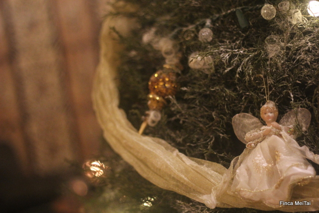
C'est sûr, c'est Noël
Première chose, faire mariner le gibier dans une giclée de vieux bourgogne de derrière les bambous. Comme il n'y avait pas de gibier, je me suis rabattu sur un filet de porc. Comme il n'y avait pas de Bourgogne, même derrière les bambous, j'ai empoigné une bouteille de merlot italien. Et hop, mariné le cochon!
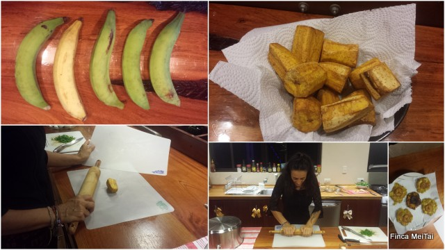
Les étapes-clef de la confection des Patacones
Deuxième étape: faire les Patacones. Alors là, rien de plus facile: on va dans le jardin, on coupe un régime de 'platanos', ce sont des bananes à cuire, et l'on extrait 5 bananes. Pour l'occasion, je m'y suis pris un peu tard et les bananes étaient encore vertes, ce qui, heureusement, n'influence que peu le résultat final. Ensuite, on pèle et on tronçonne les bananes que l'on plonge dans l'huile bouillante. Puis, on les écrase pour faire des petites crèpes ou des gros chips, que l'on assaisonne et refrit. C'est comme des frites, en somme.
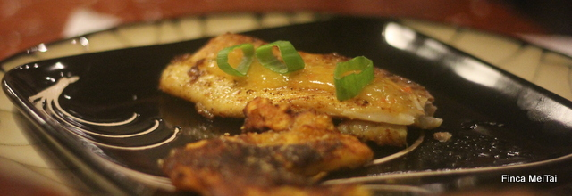
L'entrée - Tilapia fumé avec chutney de mangue
J'oubliais, pendant l'après-midi, profitant d'une accalmie, j'avais eu la bonne idée de fumer mes filets de Tilapia dans le petit fumoir du garage, grâce aux copeaux de bois récupérés lors du rabotage du plancher de notre chambre. J'en ai profité pour cueillir une mangue, un piment et un poivron dans le jardin, afin de préparer le chutney. Dommage que j'ai pas encore réussi à faire pousser du gingembre et du céleri...
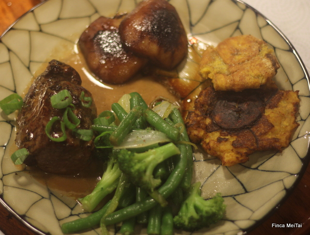
Le plat - Filet mariné de porc sauce Grand Veneur (version tico) avec fricassée de légumes, poires flambées au Guaro et patacones
Et voilà comment nous avons pu manger du Tilapia fumé avec un chutney de mangue en entrée et du chevreuil sauce grand veneur en plat principal, sans pratiquement sortir de la finca (le chevreuil venait pour l'occasion de notre voisin qui, comme tout bon Tico, élève un cochon toute l'année pour le manger en famille en fin d'année). Et, pour une raison mystérieuse, le filet pur n'a pas trop la cote par ici, ce qui me valut d'en recevoir un beau pour Noël. Bon, je reconnais que les poires et les broccolis venaient des US mais on va pas pinailler. Joyeux Noël à toutes et Bonne année à tous ! Et inversement aussi !
La vidéo de fin d'année: Bonne Année 2016
Et le Site Commercial: www.Finca-MeiTai.com
14/12/2015 - L'école est finie
Au Costa Rica, l'année scolaire commence en février et se termine donc fort logiquement en décembre. Les enfants ont réussi leur année sans encombre et peuvent maintenant jouir d'un repos bien mérité. Leurs journées sont rythmées par les pulsations du réseau Internet: quand la connexion est bonne, ça s'agite derrière les smartphones, quand le réseau est naze, ça glandouille devant la téloche. J'avais oublié à quel point un ado peut ne rien faire au cours de sa journée... Pourtant, à une époque, j'étais moi-même un professionnel surentrainé, du moins aux dires de mes parents.
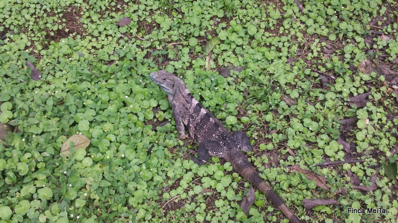
Y a pas d'lézard
Bref, les enfants ne foutent rien mais cela n'empêche pas l'activité fébrile d'animer la finca. En effet, nous avons de plus en plus de visiteurs et malgré l'amélioration sensible de notre technique, cela nous occupe beaucoup. Surtout Cécile, soyons honnêtes. Mais par une chance incroyable, les touristes de toute nationnalité que nous voyons défiler sont tous aussi sympathiques les uns que les autres. Chaque fois, nous vivons une petite histoire d'amitié.
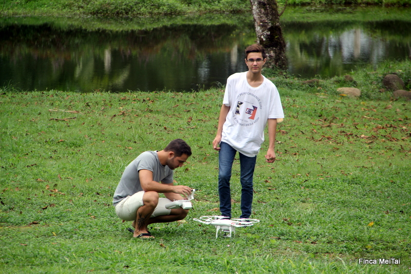
Sidney et Nehuen
Le dernier en date est un Argentin nommé Nehuen qui fait le tour du monde en voiture avec un casticho gonflable. Qu'est-ce donc ? me demanderez-vous. Ch'est un chateau. Mais les Argentins prononcent le double ll de castillo ch. Ca fait Casticho. Et ça nous a bien fait rire. Cho me chamo Nehuen! On a directement sympathisé et notre ami a prolongé son séjour pour que l'on puisse échanger nos expériences respectives. Un vrai bonheur. Il avait même un drone de compet dans ses bagages, ce que nous avons mis a profit pour réaliser quelques prises de vue aériennes de la finca. Enfin, on aurait dû... Car, au grand dam de Sidney, le drone n'a jamais voulu décoller.. Snif, snif.
Magnifique selfie en famille
On a laissé partir Nehuen et son chateau gonflable (qu'il érige gratuitement pour les enfants défavorisés qu'il croise au cours de son périple). Déjà arrivaient deux jeunes américains fort sympathiques qui nous avaient affirmé ne pas aimer les petits déjeuners. C'est sans doute pour cela qu'ils sont restés attablés au deck pendant 4 heures à papoter avec nous, après avoir dévoré tout notre stock de pain fait maison des petites mains blanches de Cécile.
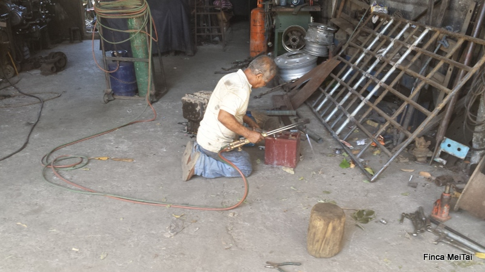
Le meilleur endroit pour réparer une batterie
Malheureusement, tout n'est pas rose... Notre kart de golf n'est pas vraiment fait pour les routes cabossées de la région. Aussi, l'acide gicle-t-il lors de nos randonnées corrodant les contacts jusqu'à la rupture. Lorsque cela arrive, nous allons à l'atelier de Mr X qui nous soude une borne en plomb à la place de la vis arrachée et hop! on repart pour un tour. Le système D n'est pas mort...
Voir aussi le Site Commercial: www.Finca-MeiTai.com
18/11/2015 - Quand il fait beau
Quand il fait beau, le jardin resplendit de toutes ses couleurs. Le matin, l'air est si pur qu'on pourrait toucher la cime des arbres, il fait si calme qu'on entend le gazouillis des oiseaux et le glouglou des cascades qui entourent la maison. Parfois, dans ce concert anarchique de notes sans harmonie - mais tellement naturel - retentit le cri glaçant des singes hurleurs.
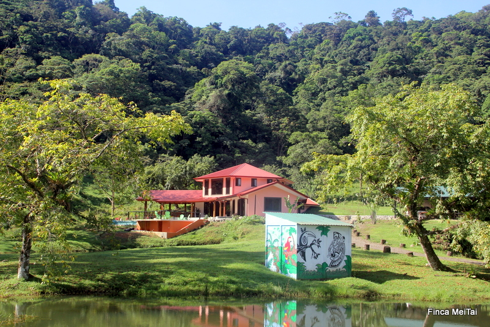
La maison au petit matin
Quand il fait beau, exactement comme dans Blanche Neige, Cécile entretient les habitations de nos visiteurs avec un petit oiseau sur la main... C'est bien ce que je disais, le Costa Rica, c'est DisneyLand. Cécile, qui lit mes billets avant que je ne les publie, me fait remarquer qu'elle entretient les chambres même quand il ne fait pas beau. Cela va sans dire. Mais le petit zoizo ne vient que par beau temps.
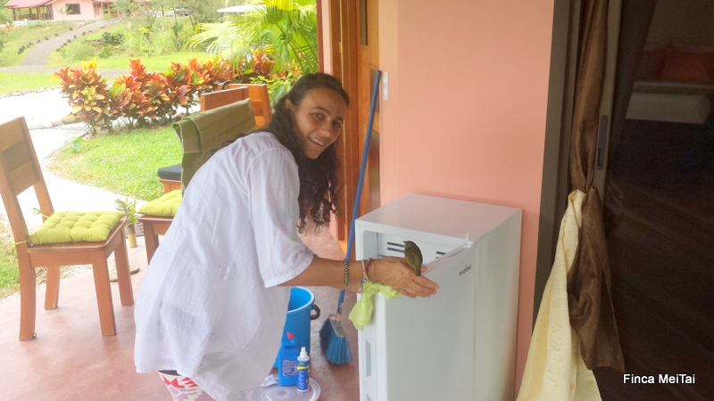
Cécile et son compagnon
Quand il fait beau, tout pousse. Bien que la finca s'étende sur près de 40 hectares, nous n'avons qu'un tout petit jardin. A peine 2 hectares, coincés entre la forêt et les pâturages. Mais le climat est ici très favorable à l'épanouissement des plantes en général et de l'herbe en particulier. C'est sans doute cela qui a permis à cet arbre majestueux de croître et culminer à plus de 60m...
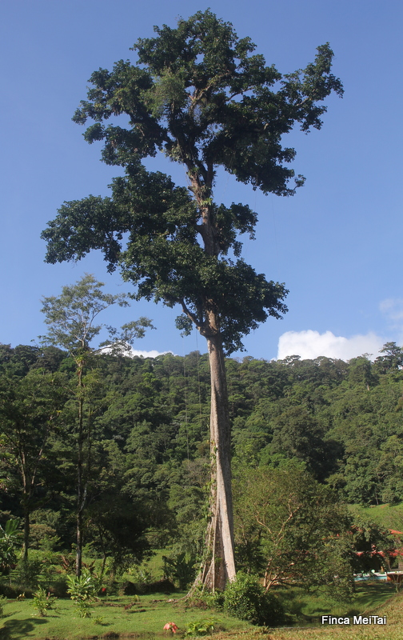
L'arbre au bord du lac est vraiment haut
Quand il fait beau, les taupes gambadent gaiement dans les sols terreux et mangent les racines des plantes que je m'échine à faire pousser. Vu le temps que je passe à entretenir nos 2 hectares de jardin (on y a quand même planté plus de 400 fleurs et arbustes), je n'ai pas l'intention de me laisser importuner par des nuisants, aveugles de surcroît. J'ai donc fait appel à Esteban qui a placé 2 pièges sur le chemin de la taupe (entre 2 monticules de terre). Le résultat ne s'est pas fait attendre: la pauvre bestiole s'est étranglée dans le collet et a fini dans le ventre d'un rôdeur qui passait par là. Nous n'en avons retrouvé que la queue et une patte griffue...
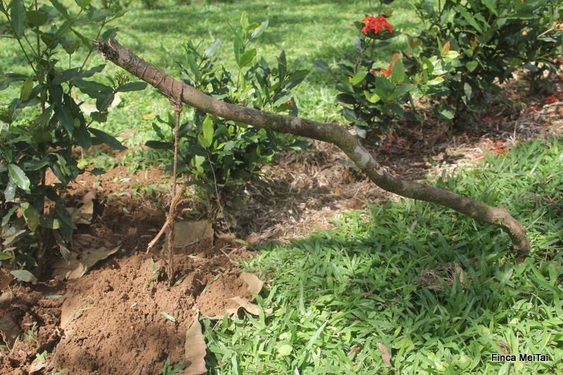
Piège à taupes
Quand il fait beau, c'est l'occasion idéale pour tondre. Une meute de débroussailleurs arrive pour nettoyer les pelouses. Le même scénario se reproduit chaque mois. Et je dois avouer que j'éprouve une admiration béate pour ces mecs, habillés de pied en cape, qui triment sous le soleil, dans le vacarme assourdissant de leur engin, pendant 7h d'affilée. Moi, à l'ombre, en fabriquant mes meubles ou entretenant mon potager, je transpire déjà à grosses gouttes.
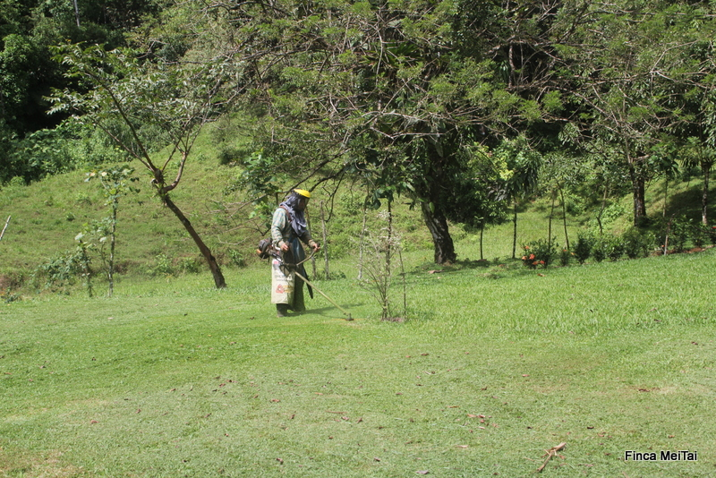
Le jardinier
Quand il fait beau, c'est chouette. Et quand il fait pas beau, c'est chouette aussi.
Voir aussi le Site Commercial: www.Finca-MeiTai.com
14/11/2015 - La finca fébrile
Les activités sont nombreuses dans la finca. Outre l'accueil, le logement et la sustentation de nos hôtes, ce qui constitue le but de notre vie, nous offrons également des petits tours à cheval, à pied dans le jardin ou même à pied dans le bosquet. Syr Daria n'hésite d'ailleurs pas à faire des démonstrations équestres sous les yeux ébahis des visiteurs.
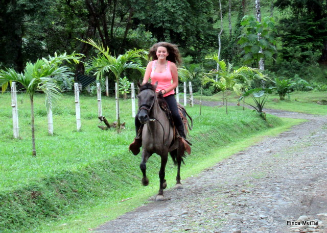
Syr Daria arrive au grand galop
En effet, toute autre chose restant égale, il faut dire que les gens se pressent de plus en plus nombreux à l'entrée de la finca. On vient de fêter le cap des 50 nuitées et celui, prestigieux s'il en est, des 10 avis sur TripAdvisor! Et tous des maximums! Les Ticos, Français, Espagnols, Canadiens, Israéliens et autres Américains qui sont passés chez nous ont tous été subjugués par les lieux. Il faut dire que notre finca a de quoi surprendre les plus blasés...
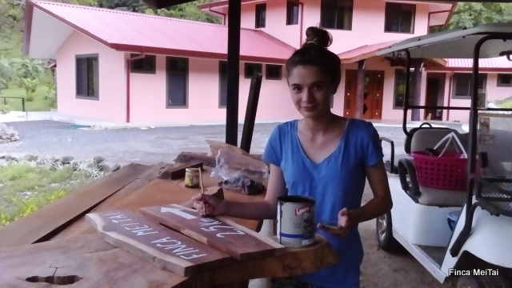
Kenya peint les panneaux
Quoique... En cherchant bien, les Espagnols ont trouvé un défaut à notre projet. Si, si! C'est possible. L'accès ne semble pas aisé par manque d'indications. Il faut dire que nous n'avons placé que 3 panneaux sur le chemin et nous avions complètement oublié d'indiquer le chemin pour les aventuriers venant du Nord. Nous nous sommes mis au travail immédiatement, Eric s'occupant de trouver des planches et des poteaux, Kenya s'occupant de la calligraphie. Quand on vous dit que c'est un projet familial!
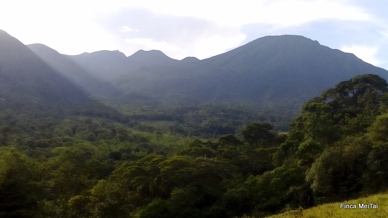
Vue du sommet de la finca: le volcan Miravalles à l'ouest
Dernièrement, nous avons emmené Bernard, un visiteur Québécois, faire le grand tour, soit 3 heures de marche, dans la finca, en passant par la crête d'où l'on a une vue imprenable sur le volcan Tenorio à l'est et une vue préhistorique sur le volcan Miravalles à l'ouest. C'est tellement beau qu'on pense à s'y faire construire un chalet d'été, rien que pour nous, pour y faire des escapades en amoureux.
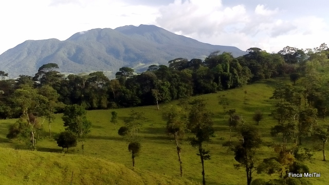
Vue du sommet de la finca: le volcan Tenorio à l'est
Je crois cependant qu'un tel étalage de beauté n'aie quelque origine surnaturelle et que nous risquions l'envoûtement permanent si nous décidions de nous y installer trop longtemps. De toutes façons, l'heure n'est pas à ce genre de projet.
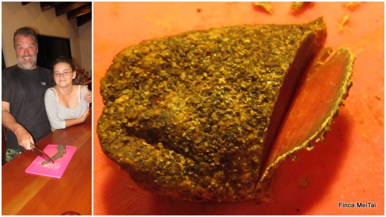
Premières salaisons
Pour finir, je tiens à rassurer les lecteurs qui s'inquiètent de l'évolution de la chambre froide et de son précieux contenu. Qu'ils se rassurent! Depuis qu'on y a placé un déshumidificateur, il y fait chaud certes, mais sec. Je l'ai donc rebaptisée 'chambre sèche' et les jambons y ont acquis une consistance parfaite. Reste à travailler le goût. Malgré ma lecture assidue des blogs de salaisonneurs avertis, et la grande attention que j'ai portée à respecter les recettes, mes jambons sont beaucoup trop salés. A la limite du comestible... Peut-être est-ce dû au gros sel que je n'ai pas trouvé et que j'ai donc remplacé par du sel fin? J'ai légèrement adapté les durées de salage pour la prochaine fournée. J'ai également changé ma technique de poivrage... Sera-ce suffisant? Réponse dans quelques semaines...
31/10/2015 - Fin des vacances
Cela fait 3 semaines que je n'ai pas donné de nouvelles. Il faut dire que nous étions fort occupés à visiter les alentours avec les parents de Cécile.
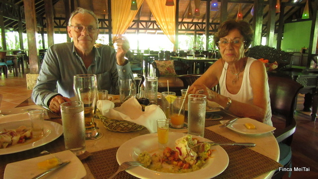
Pour les 52 ans de mariage, nous avions réservé le meilleur hotel de la région
Car figurez-vous que, malgré qu'il soit très aisé de rien faire au bord de la piscine dont la température oscille entre 26° et 28°, nous avons décidé de battre la campagne - sans trop nous éloigner de la finca pour ménager nos hôtes.
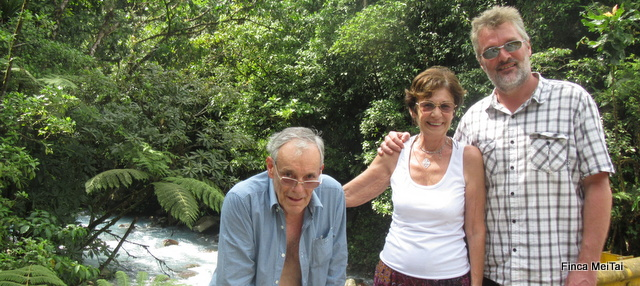
On pose devant le Rio Céleste
Il y a en effet beaucoup de visites touristiques à réaliser de ci, de là. Dans le désordre, nous sommes passés au Rio Céleste (qui doit son nom à la couleur de ses eaux d'un bleu céleste), à Tilaran, aux grenouilles de Bijagua, aux jardins d'Héliconias, aux sources chaudes de Bagaces, etc.
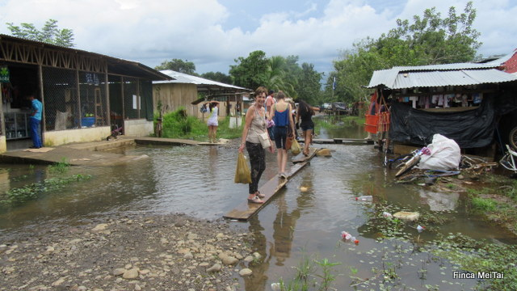
Thalou au beau milieu du shopping center de La Cruz
Nous sommes même partis en expédition au Nicaragua pour profiter des conditions exceptionnelles sur les chaussures en cette fin d'année scolaire. Et là, pour le coup, il faisait chaud. Même Cécile a transpiré...
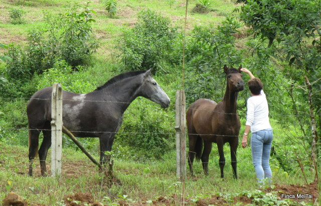
Thalou caresse nos chevaux
Les parents de Cécile ont été très courageux et ont, je pense, bien apprécié leur séjour parmi nous. Le réveil matinal au chant des oiseaux et au cri des singes hurleurs les a un peu surpris le premier jour mais, sur la fin, ils ne pouvaient plus s'en passer, s'offrant même un petit quart d'heure de gazouillis vers 5h avant de se recoucher.
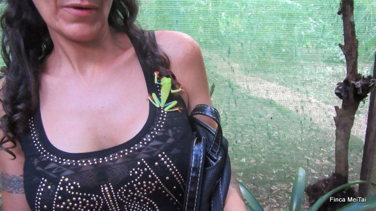
Une grenouille verte a bondi sur Cécile
Thalou a tenu à faire le tour complet de la finca: l'enclos à chevaux, la piscine, les taureaux, la rivière sauvage, la piscine, le jardin d'Héliconia, les canards, la piscine, le sentier dans la forêt et surtout, la piscine. Non, je plaisante, Thalou n'est pas restée trop longtemps au bord de la piscine (dont elle a même nettoyé l'ilot central grâce à des nunchakus).
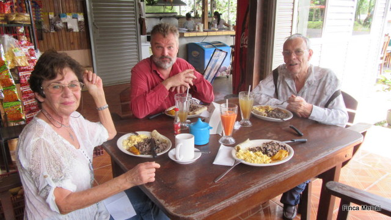
Petit déjeuner Tico: le fameux Gallo Pinto
Roger, quant à lui, s'est approprié la terrasse couverte où souffle en général une petite brise rafraichissante. C'est un excellent endroit pour faire des sudokus, manger des papayes ou regarder jouer les canards.
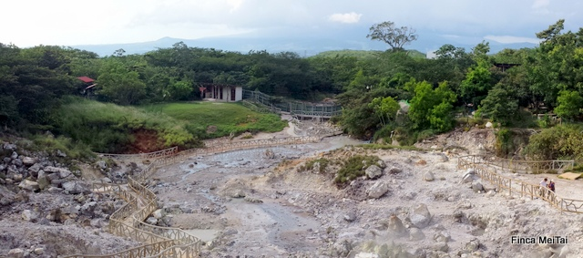
Les sources chaudes de Bagaces
Bref, les parents de Cécile nous ont rendu visite et peuvent maintenant témoigner en toute impartialité: je travaille sans cesse, seule raison objective qui explique ce que l'on a pu réaliser en si peu de temps.
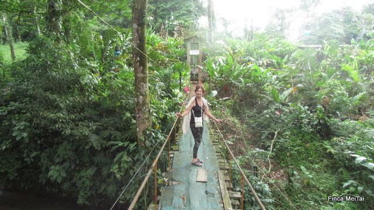
Thalou a même essayé les ponts suspendus
Merci à vous, Roger et Thalou, d'être venus de si loin pour nous saluer, les bras chargés de cadeaux.
11/10/2015 - Les mandarines pullulent
Les agrumes abondent en ce moment. Et vas-y que je te cueille un citron, et vas-y que je te trimballe une orange, et vas-y que je balance une mandarine... On ne sait que faire de tous ces fruits.
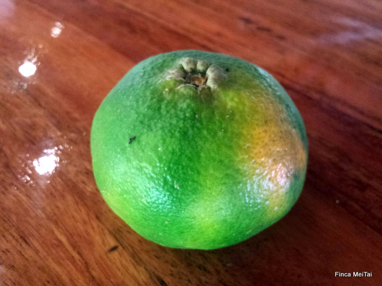
Les mandarines sont vertes
Et bien moi, si! Je sais quoi faire! Je pèle la mandarine. J'enlève consciencieusement le blanc du zeste et je plonge ces petites pelures dans de l'alcool éthylique pur.
Mandarines vertes, décoction verte
J'attends 10 jours. Je fais fondre du sucre dans l'eau à 200° Farhenheit précisément. Je laisse refroidir. J'ajoute cette potion à ma décoction et j'obtiens... du Mandarinecello. C'est délicieux.
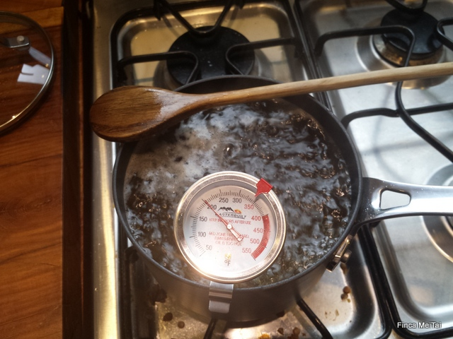
L'important c'est de maintenir la température à 200°F
Je fais cela avec toutes sortes d'agrumes. J'ai même essayé avec de l'ananas, et ce fut exquis. Différent certes, mais exquis.
Mandarinecello
Et sinon, quoi de neuf? Rien. Les parents de Cécile sont sans voix devant l'indicible beauté de notre finca. Ils méditent sur la terrasse. Sauf Thalou qui papote toute la journée...
5/10/2015 - Bienvenidos Los Padres
Aussi invraisemblable que cela puisse paraître, les parents de Cécile ont décidé de venir nous saluer. En ce beau jeudi, premier octobre 2015, ils arrivaient via Madrid, atterrissant a San José, la capitale, où nous les attendions, un peu anxieux. Après un léger retard à l'atterrissage, dû à un orage tonitruant qui s'est abbatu sur l'aéroport à l'instant précis où arrivaient nos aieuls, nous les avons vu émerger du bâtiment, frais comme des gardons, avec quand même près de 24h de voyage dans les jambes. Chapeau, les vieux!
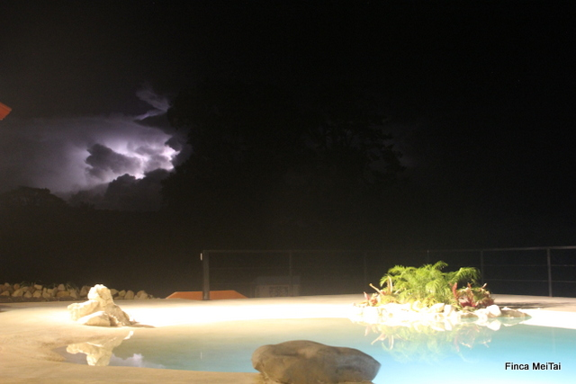
L'orage grondait au loin pour fêter l'arrivée des parents de Cécile
Et ce n'était pas encore la fin du voyage... Il nous restait à les conduire dans nos lointaines collines, à près de 3 heures de route, sous une pluie torrentielle. Arrivés chez nous, la pluie cessa et nous jouimes pleinement du spectacle son et lumière offert par dame nature.
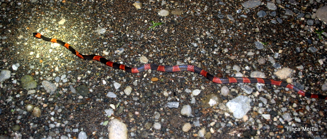
Même les serpents corail se sont joints à la fête
Les retrouvailles furent joyeuses, nos visiteurs s'émerveillant de la beauté des lieux - encore mieux que sur les photos. En plus, ils ont eu la bonne idée de venir les valises chargées de cadeaux, ce qui a contribué à l'accueil triomphal que leur firent les enfants.
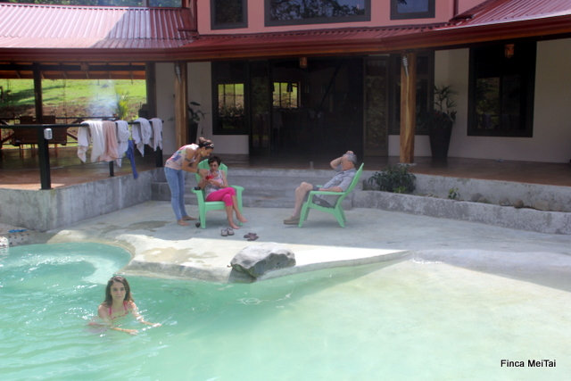
Un petit repos bien mérité au bord de la piscine
Cerise sur le gateau, le temps est au beau fixe depuis quelques jours, ce qui rend le séjour encore plus agréable. Un petit 28° durant la journée, un petit 23° pour la nuit. Des oiseaux et des fleurs multicolores et les repas du terroir servis sur la terrasse en bois. Que demander de plus?
27/09/2015 - La semaine infernale
Me revoici pour un petit topo de la semaine, avec compte à rebours incorporé. On commence donc par aujourd'hui, dimanche, ou l'on a eu droit à un soleil radieux. Tellement radieux que je cuisais à petits bouillons dans ma chemise trempée de sueur en nettoyant les plants de café. J'ai tenu, le temps de terminer par une poignée d'engrais, avant de revenir à la maison et de plonger dans la piscine avec Cecile et les enfants. On s'est bien rafraîchi avant de se faire des pistolets à l'américain (du pain avec du tartare de boeuf) que j'ai préparé moi-même. Vous imaginez bien qu'ils n'ont par ici pas la moindre idée, pas plus que les français, de ce que peut bien être l'"américain". On s'est goinfré comme des porcelets. C'est curieux d'ailleurs, en Belgique, on n'a pas vraiment de plat typique, à part le waterzooi - qui n'a rien de spécial - et les witloofs au gratin. Alors la cuisine de chez nous ne nous manque pas trop. Sauf l'americain et les chokotoffs. Deux singularités gastronomiques dont aucun Belge de souche ne peut se passer. Je suis sûr que les végétariens belges mangent de l'americain. Nous, en tous cas, on s'est rempli la panse.
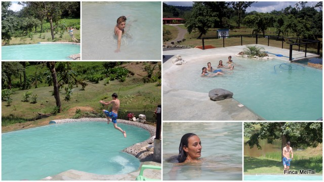
La piscine etait fort agréable (29 degrés) et donc fort occupée en ce beau dimanche
Samedi, il faisait également beau. Nous avions un programme chargé: des potron-minet, nous devions nous rendre dans une finca voisine ou ils avaient décidé d'assécher un étang pour le désherber et en extraire les poissons afin de les vendre. Nous avons de beaux étangs bien vides, aussi étions-nous intéressés par l'acquisition de quelques spécimens, histoire de peupler nos eaux. Hélas, la pêche ne fut pas miraculeuse car le temps d'évacuation de l'eau avait été mal estimé et la lagune était encore remplie lors de notre passage. Qu'à cela ne tienne, nous avons laissé un conteneur sur place et sommes rentrés à la finca pour entretenir le jardin et préparer un excellent poulet rôti au feu de bois avant de se vautrer tous les 5 devant un navet hollywoodien.
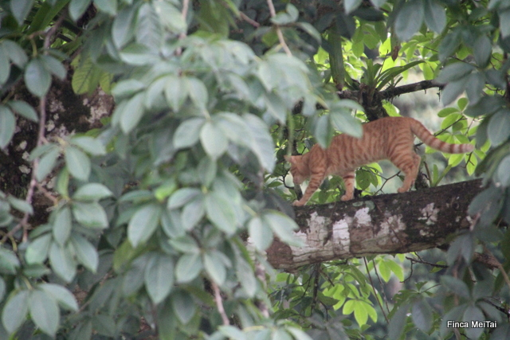
Freckles se promène dans un Pochote
Vendredi, nous avons attendu l'électricien, qui, malgré ses promesses faites le matin même, n'est jamais venu et a bien évidemment refusé de répondre au téléphone le restant de la journée. Cela m'a permis de peaufiner ma lettre de réclamation à l'autre électricien, qui, lui non plus, ne veut plus venir, alors qu'il n'a pas fini son travail. Avec une mauvaise foi invraisemblable, il continue à prétendre que tout est en ordre, qu'il va venir, qu'il est malade, que s'il ne vient pas c'est de notre faute, qu'il souhaite une garantie de paiement, que l'on doit acheter le matériel avant qu'il ne revienne, etc. Tout cela n'a aucune cohérence mais cela ne semble pas gêner le monsieur. Si sa prévarication n'engendrait pas de réel problème pour nous et nos visiteurs (comme l'absence de terre, par exemple), ce serait même drôle. J'écris donc de longs mails dans la langue de Cervantes pour expliquer à un électricien qui se croit plus malin que moi pourquoi ses câbles sont mal dimensionnés et son réseau mal construit...
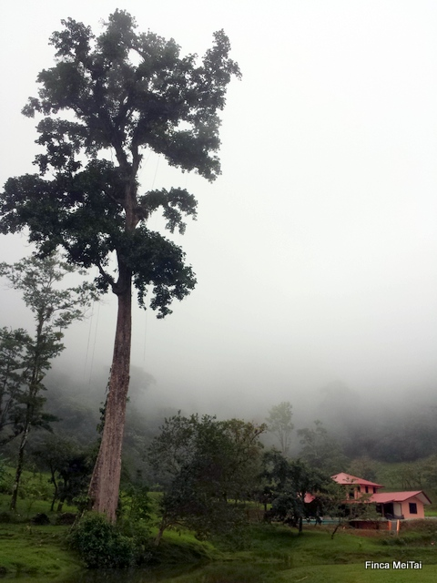
La finca dans la brume.
Jeudi, je me suis rappelé pourquoi je ne mets que rarement en pratique les lumineux conseils que me prodiguent des tas de gens aussi expérimentés qu'incompétents. Sur les conseils d'un expert auto-proclamé quelconque, j'ai en effet acheté un déshumidificateur pour contrer le deuxième principe de la thermodynamique - malgré le fait que je sache que c'est impossible. Notre chambre froide est en effet chaude, comme vous le savez tous maintenant, mais elle est de surcroît humide, ce qui, vous en conviendrez, n'est pas idoine pour sécher du saucisson. Comme l'on m'avait assuré qu'avec un déshumidificateur, ma pièce deviendrait plus sèche ET plus froide, je me suis laissé tenter. En ce jeudi, j'ai pu valider que la chambre froide devenait sèche - 50% d'humidité relative, à comparer aux 80% ambiants - mais encore plus chaude qu'avant - ce qui est somme toute assez normal, considérant l'énergie dégagée par la condensation de l'humidité ambiante, qui ne peut s'échapper dans cet endroit confiné. Il y fait allègrement 88 degrés... Farenheit évidemment, puisque l'appareil que j'y ai installé est d'origine étasunienne. En Celsius, ça fait quand même plus de 30 degrés, une température incompatible avec la garde de salaisons en cours de confection (rassurez-vous, pendant ces petites expériences, mes jambons sèchent dans le frigo). Bref, je ne suis pas fort avancé.
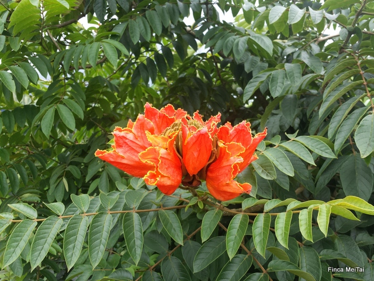
Le Tulipier du Gabon - LLama del Bosque ici - nous en avons planté 5 dans la finca
Mercredi, nous sommes allés à Canas, la ville du coin, pour changer nos plaques d'immatriculation (ici aussi, ils connaissent le truc pour se faire du blé sur le dos des automobilistes en changeant le format des plaques tous les 5 ans). Nous avons également acheté le déshumidificateur dont question ci-dessus. En rentrant à la maison, nous avons constaté que nous avions eu de la visite. Des petits malandrins sont partis (probablement durant la nuit) avec les vélos tout neufs des enfants et une bonne partie de mes outils. Ma ponceuse, ma foreuse, mes mèches et mes tournevis se sont envolés. J'ai un peu de mal à contenir ma colère... ça fait la 3ème ou 4ème fois qu'on nous vole en un an (mais les fois précédentes, c'était durant la construction, et je mettais ca sur le compte de l'un ou l'autre ouvrier cleptomane). Je crois que, pour finir, je vais faire comme tous les étrangers: mettre des barrières, électrifiées si possible, des miradors, et engager un gardien et une milice privée. Comme ça, je suis sur d'avoir la paix et je ne serai pas venu au Costa Rica pour rien.
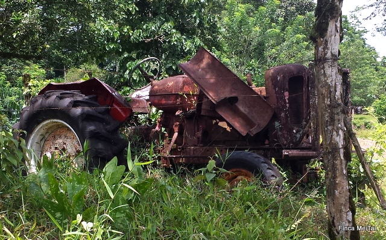
Voila un moteur diesel qui ne pollue pas... et sans trucage électronique :-)
Mardi, Internet ne fonctionnait plus... Le technicien est venu et a confirmé que nous perdions le signal entre l'entrée de la finca et la maison, c'est-à-dire durant le passage par le circuit installé par le monsieur dont question plus haut (celui qui fait le malin). De fait, après avoir vérifié chaque connexion dans chaque boite de dérivation, j'ai trouvé un fil déconnecté (il n'y a que 4 boîtiers et c'était le 3ème). Ensuite, nous avons cherché le chat qui avait disparu depuis le matin. Ne rigolez pas, le mois passé, on a retrouvé le chat de notre voisin dans un boa... Puis j'ai donné un coup de téléphone au bûcheron, avec lequel j'ai rendez-vous depuis 2 semaines, qui m'a juré ses grands dieux qu'il était fort occupé mais qu'il viendrait bientôt (comme à l'occasion de mes 6 appels précédents). A la fin de cette semaine, en ce beau dimanche, j'étais particulièrement heureux de ne rien faire dans ma piscine...
21/09/2015 - Vie de tous les jours (3)
Alors que, sans surprise, la fête nationale fut célébrée en grande pompe dans tout le pays en ce 15 septembre, nous n'avons pas de temps à consacrer à ne rien faire. C'est bien simple, en septembre, nous avons accueilli une famille en tout et pour tout. Mais ils sont restés 2 jours. C'est vous dire si l'on travaille dur. Et c'est aussi vous dire si la banqueroute nous guette.
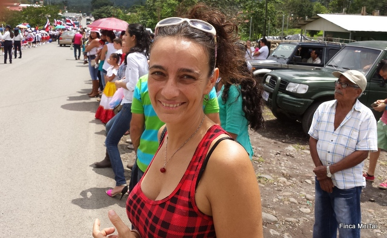
Cecile assiste au défilé du 15 septembre
Peut-être n'avons-nous pas encore la notoriété que nous méritons, mais nous persistons dans notre concept de tourisme 'sur mesure'. Notre petite famille d'américains a donc pu partager notre vie durant tout le week end, y compris les repas, la piscine, les sentiers dans la foret et le cheval. Cette proximité les a vraiment séduits. Nous en sommes ravis et espérons maintenant qu'ils nous encensent et nous envoient d'autres candidats au farniente.
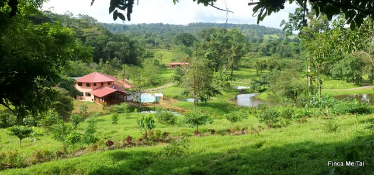
Notre finca, plus belle de jour en jour
Toutefois, ne croyez pas que cela s'improvise. Pour que les clients se sentent chez nous comme chez eux (mais uniquement le bon coté du 'chez eux', sans la vaisselle, l'entretien des lieux, les courses, le nettoyage, etc), Cecile a un emploi du temps bien chargé. En effet, pour que le petit déjeuner soit prêt à 7h, elle se lève à 5h30, afin de préparer une table parfaite: un petit coup de balai sur la terrasse, des tables avec nappe, des fleurs du jardin, une déco personnalisée, des petits pots en tous genres - pour les confitures, le beurre, le sucre, le sel, le lait, les jus, etc - des fruits frais fraichement coupés, le pain, les brownies et les couques faits maison - la veille - les tranches de jambons, que Cecile nettoie une par une. Bref, le petit déjeuner est royal. Des que les visiteurs quittent la propriété, Cecile se rue dans leur chambre pour la remettre en état, ce qui prend environ 2h. Puis, elle rentre à la maison pour préparer le pain du lendemain. Comme ça ne suffit pas, elle prépare aussi des gâteaux, genre brownies, rouleaux à la crème, brioche, muffins, etc. Evidemment, il est possible de faire tout cela beaucoup plus vite, mais pas avec la qualité souhaitée par Cecile.
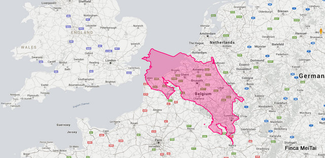
Le Costa Rica superposé à la Belgique, pour vous donner une idée de la taille - on habite à Ostende.
Ce week end, nos visiteurs ont occupé l'espace piscine et le deck. Ils ont emprunté les sentiers de foret et Cecile a accompagné leur fille pour une ballade à cheval d'une heure dans la campagne environnante. Le soir, ils ont mangé avec nous. On leur a servi un petit apéritif, des chips, puis un repas (des pizzas faites maison le premier jour et du poulet rôti le deuxième jour, le tout cuit au feu de bois), suivi d'un dessert (des muffins au chocolat avec une meringue pour la soirée d'hier). Lorsque, vers 22h, les visiteurs s'en retournent chez eux, Cecile en profite pour tout ranger et faire une partie de la vaisselle avant d'aller dormir vers 23h. Bref, après 2 jours, elle est sur les rotules. Mais quel service !!!
11/09/2015 - Vie de tous les jours (2)
Tous ceux qui vivent au nord du Costa Rica le savent, les habitants du Nicaragua voisin sont des fainéants analphabètes. C'est en tous cas ce que nous ont affirmé les Ticos. C'est bien simple, ils viennent du Nord, tels des loups affamés, voler le travail des bons Costariciens. Ils n'hésitent pas à travailler dans les champs pour 1000 colones de l'heure (un peu moins de 2$) du matin au soir. C'est vraiment scandaleux. Il parait que certains travaillent même au noir dans la construction...
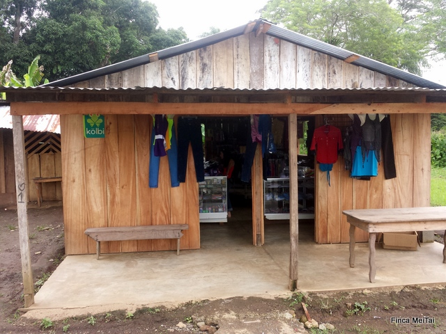
Le supermarché de Mexico de Upala
C'est curieux qu'ils viennent ici car, parait-il, tout est moins cher chez eux. Enfin, c'est ce qu'on nous a dit, ce qui n'a pas manqué de provoquer chez moi une réaction typiquement polytechnicienne: si on allait acheter des trucs la-bas? Je ne devais pas être en grande forme car, compte tenu de la gloutonnerie de notre Land Cruiser, j'aurais pu déduire qu'il nous faudrait un véhicule plus grand pour rentabiliser le voyage. Mais bon, notre voyage - s'il échet - aurait également une vocation ethnologique de portée planétaire: les Nicas sont-ils vraiment cons? Pour en avoir le coeur net, nous avons décidé d'armer un navire, euh non, excusez-moi, c'est l'appel du large qui se manifeste quand je parle de voyager, nous avons rempli le réservoir d'essence et sommes partis vers le nord, à la recherche du pays de cocagne, un peu comme des Africains en quête d'Europe - pour rester dans l'air du temps...
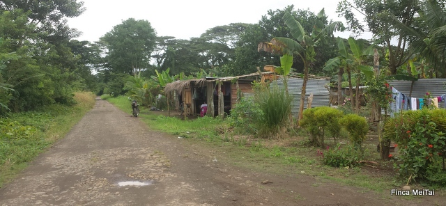
A gauche, le beau Costa Rica; à droite, le Nicaragua des fainéants
Comme le Nicaragua est à 40 km d'ici, il nous a fallu moins d'une heure pour arriver à la frontière, au terme d'une route aux revêtements de plus en plus grossiers: asphalte, pierraille, terre pour finir par une boue gluante. C'est à croire qu'on essaie de nous dissuader de nous rendre chez nos voisins. D'ailleurs, après un ultime cahot, nous pensions rebrousser chemin quand nous aperçûmes le poste frontière, une cahute en bois, tenue par deux gamins armés de mitraillettes qui nous enjoignirent de retourner sur nos traces...
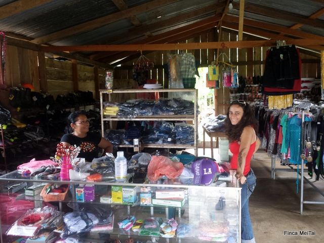
Cécile discute avec la gérante
Qu'à cela ne tienne, nous avons fait marche arrière sur une centaine de mètres avant de nous arrêter devant un magasin le long de la route (mais du côté Nica) pour acheter deux trois choses indispensables, comme un baume du tigre à la Marijuana dont l'efficacité est de notoriété publique (pour soigner les courbatures hein, n'allez pas imaginer des trucs). On en a profité pour discuter avec la propriétaire ce qui nous permet de démentir: non, les Nicas ne sont pas des crétins. Pas tous en tous cas.
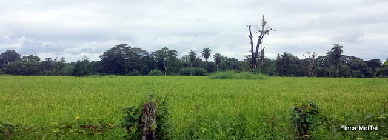
Le lac Nicaragua est situe à 6km de cet endroit fort savanesque
Par contre, nous les avons trouvés charmants et accueillants. On s'est dit qu'on reviendrait bien avec un permis (pour passer la frontière) et visiter le lac et ses alentours. En plus, on ne nous avait pas dit que des conneries: les vêtements sont vraiment beaucoup moins chers que chez nous. 15$ pour un jeans, 10$ pour une paire de chaussures, par exemple. En enfourchant ma voiture pour partir, je n'ai pas pu m'empêcher de prononcer ces paroles devenues célèbres: "I'll be back".
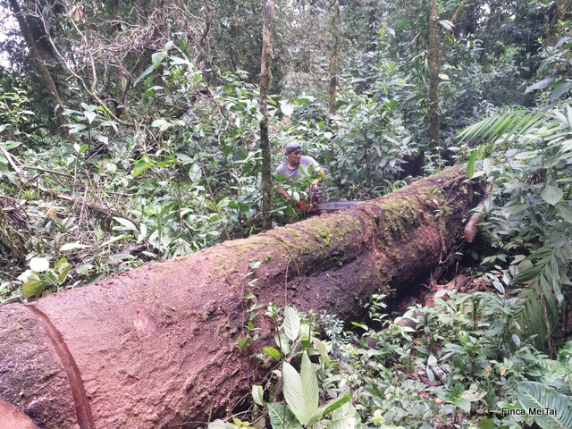
Oscar dégage le chemin
Après cette expédition aux confins du pecos, nous sommes bien sagement rentrés à Bijagua ou m'attendait Oscar. En effet, parmi nos activités récurrentes figure l'entretien des sentiers de la finca et il se fait que lors de notre dernière visite dans le bosquet (celle ou je me baignais, dans l'avant-dernier billet), nous avions découvert un arbre barrant la route sur notre chemin. Nous avons décidé de dégager un passage à la tronçonneuse, eu égard au diamètre du tronc...Dommage que ce bois ne vaut pas tripette, on aurait pu en faire des planches ou des poteaux.
6/09/2015 - Vie de tous les jours (1)
Je me rends compte que voila plus de 20 mois que nous sommes arrivés au Costa Rica et que je n'ai pas beaucoup parlé de notre vie de tous les jours, si ce n'est pour me plaindre des lenteurs de la construction. En fait, notre vie est bien routinière, comme il se doit...
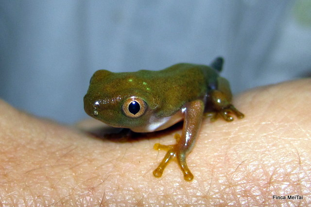
Glop
Les enfants se lèvent a 5h du matin (Cecile à 5:30 et moi à 7) pour prendre le bus qui passe devant la finca à 6h. A 7h, l'école commence et finit normalement vers 16h. En pratique, les professeurs sont très souvent absents et les enfants finissent régulièrement vers midi, heure à laquelle nous passons les chercher au village distant de 3km de la finca.
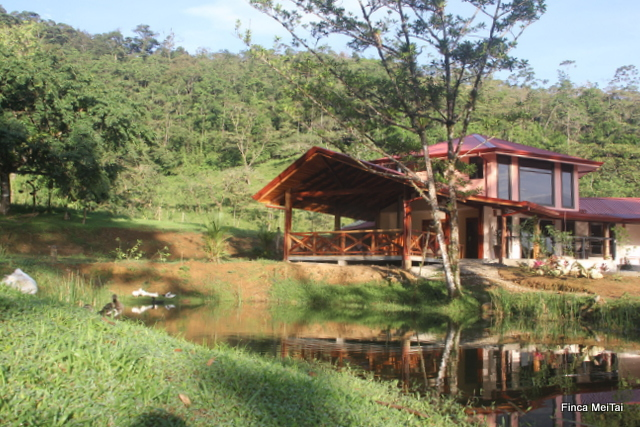
La maison au lever du soleil
Nous en profitons pour faire les courses au supermarché. Selon les cas, nous passons aussi chez le boulanger, chez Betty pour chercher un poulet, chez Tchango pour récupérer un meuble, etc. Bref, on fait nos courses. Et, bien que l'on soit à la campagne, et que les échoppes ne sont pas toujours d'une propreté ou d'un ordre irréprochable, on trouve un peu près les mêmes produits qu'aux US avec une différence notable: hormis pour les haricots, le choix est beaucoup plus restreint...
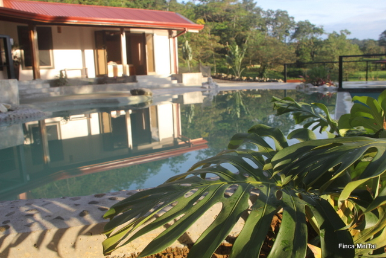
La piscine est bien calme
Une fois par semaine, on va jusqu'à Canas pour les choses sérieuses comme acheter un téléphone pour l'anniversaire de Syr Daria, porter la voiture au contrôle technique, faire le plein d'essence ou faire la file à l'ICE (pour le téléphone ou Internet), à l'INS (pour les assurances), à la Caja, à la muni, etc. Bref, on va faire la file. Une fois par mois, on va jusqu'à San Jose, la capitale, pour acheter les trucs de gringo, comme les ampoules LED, la déco des cabinas, le camembert, ou les trucs en gros, comme les produits d'entretien, les boites de tomates, les épices, le café, les sauces, voire même les beaux parents quand ils viennent nous dire bonjour.
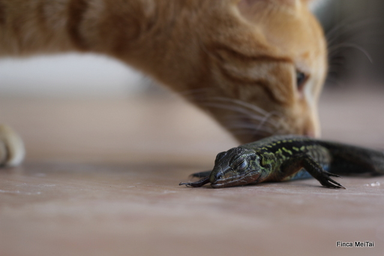
Civi est la terreur des lézards...
Bref, la vie au Costa Rica n'est pas fort différente de celle en Europe, sauf pour la météo. Et, évidemment, le Tico qui ne cesse de nous surprendre par sa désinvolture pratiquement surnaturelle. C'est assez déroutant mais c'est une leçon de vie... En luttant âprement contre près de 50 ans d'éducation, j'arrive parfois à contenir ma rage de ne pas voir arriver l'électricien qui m'a juré ses grands dieux qu'il était en chemin. J'essaie de progresser sur la voie du je-m'en-foutisme qui, quand il est institutionnalisé comme ici, permet de prendre la vie avec la légèreté qu'elle merite... mais j'y arrive pas... et si je croise l'électricien, je l'agonirai d'injures, ce sale f.. de p...
29/08/2015 - Après-midi au vert
Maintenant qu'on est installé, on peut enfin s'adonner à nos passions respectives, la gastronomie pour moi et le repassage pour Cécile. Mais non, je plaisante, Cécile aime le sucré et moi le salé, alors on s'entraide. On a concocté notre premier pâté de foie dans le style champêtre, au rhum à défaut d'armagnac. Et il n'est pas mauvais. Les jambons fumés et assaisonnés au poivre, cumin ou fenouil sèchent dans la chambre chaude (car, pour une raison inconnue, la température y est supérieure à celle observée dans le reste de la maison - ce qui me force à reconsidérer le principe de Clausius avec un prix Nobel en perspective).
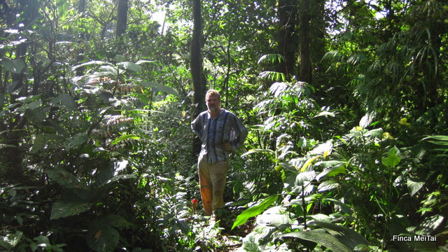
Pas de doute, c'est vert
J'ai même lancé la première production de Limoncello bio avec les citrons du coin. Le plus difficile fut de trouver de l'alcool pur, de contrebande évidemment, la potion officielle étant impossible à obtenir. Bref, la clientèle ne se bousculant pas - encore - à l'entrée de la finca (mais nous avons déjà 5 notes maximales sur Trip Advisor - nous n'avons que ça, d'ailleurs) - nous avons un peu de temps pour nous et pour découvrir les coins les plus reculés de la finca.
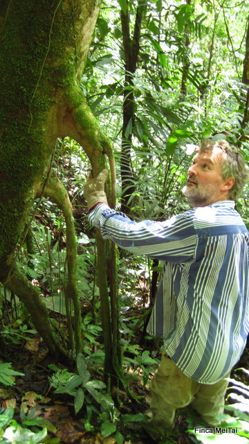
Remarquez le gant
Il faisait beau cet après-midi et l'absence de pluie depuis quelques jours promettait un terrain praticable dans le bosquet. Nous sommes donc partis par les champs de cacao - qui me dépriment à chaque visite, tant est lente la croissance des arbres - avant d'entrer dans la foret.
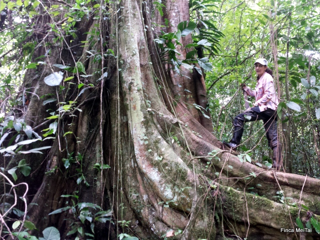
C'est le plus gros tronc de la finca
Nous avions décidé d'aller à travers tout dans une partie que nous n'avons pas encore explorée pour valider la possibilité de tracer un sentier "dans la foret primaire". Alors que nous progressions péniblement parmi les palmiers et les fougères, les grands arbres culminant à plus de 40m au-dessus de nos têtes, nous fumes intrigués par des bruits de feuillage qui se manifestaient par vagues tout autour de nous. Restant immobiles, nous vîmes approcher une meute de singes capucins, sautant de branches en branches, jusqu'à nous surplomber et nous fixer sans bruit. Puis, ils commencèrent à nous jeter des branches, l'un d'eux s'évertuant même à me chier dessus, sans grande précision toutefois.
Petit jacuzzi de fin de parcours
Cet accueil discourtois nous incita à passer notre chemin et à rejoindre le plus grand arbre (à notre connaissance) de la propriété, après avoir traversé une petite rivière tranquille. Ensuite, nous avons poursuivi notre marche vers la frontière ouest de la finca, marquée par le Rio Zapote dont les eaux tumultueuses sont plutôt chaudes en cette fin d'été. Nous en avons profité pour terminer notre petite escapade de 3 heures par un petit bain à bulles au fond de la foret...
16/08/2015 - Finie la construction, place à la gastronomie
En fait la construction n'est pas tout-à-fait finie. Il reste de menus travaux, telle la douche de la piscine, les lumières extérieures et les portes de la chambre froide. Mais, déjà, nos premiers clients ont pu apprécier l'incroyable quiétude de notre finca et l'accueil aux p'tits zognons de Cécile.
Un petit oiseau
Les premiers visiteurs ont même eu la chance de voir un Tolomuco(une espèce de grosse belette noire) poursuivre un Agouti(un gros rongeur) des potron-minet à travers le jardin. Ce n'est pas la première fois que nous apercevons ces animaux mais c'est chaque fois un grand plaisir de contempler la vie sauvage quand elle sort de la forêt pour nous faire le show.
Le Tolomuco
La présence du Tolomuco nous réjouit d'autant qu'il semblait s'intéresser aux plans d'eau, ce qui confirme la stratégie que nous avons mise en place pour attirer la faune hors de la forêt: eau, arbres fruitiers et arbres tout court. Nous espérons de la sorte créer un petit écosystème propice à l'éclosion d'une faune et d'une flore bigarrées.
A la maniere de Mike... Qu'est-ce?
Et la gastronomie? Si l'on considère que le fumage en fait partie, nous sommes en plein dedans. J'ai fait l'acquisition d'un barbecue-fumoir au gaz (Made in US, evidemment..) qu'on peut même utiliser avec du charbon ou... du bois. Si,si... Il doit être interdit à la vente en Nouvelle Zélande et en Californie, régions bien connues pour être à l'avant garde de la protection de la nature et, concomitamment, par pure coïncidence, de leur économie locale. Pour rappel, pour faire un barbecue kiwi ou californien, il faut acheter du bois car il est interdit de le ramasser dans la forêt (et encore, en général, le barbecue au bois ou au charbon est purement et simplement interdit, tant pour éviter les feux de forêt que pour protéger les citoyens des cancers de l'oesophage provoqués - tout le monde le sait - par la cuisson sur braises).
C'est un fumoir, bien sur!!
Grâce à cet appareil, je me suis lancé dans le fumage tous azimut. Poulet, Tilapia et jambon. J'utilise la sciure accumulée lors de la construction (et ça marche pas... elle brûle au lieu de se consumer, ce qui provoque beaucoup de fumée chaude - je fume et cuis à la fois). Et comme la chambre froide n'est toujours pas froide, j'ai décidé de me passer du froid: j'entrepose mes futurs saucissons à température ambiante en espérant que le fumage les empêchera de pourrir avant de sécher. Je vous informerai du succès de l'opération d'ici quelques mois.
26/07/2015 - Travailler pour de l'argent
Jusqu'à présent, nous ne travaillions plus. Enfin, nuance: nous travaillions gratuitement. Enfin, euh, sans gagner d'argent, un peu comme si c'était pour le plaisir. Mais les meilleures choses ont une fin: le bénévolat, c'est bien, mais ça craint un peu sur le plan financier... ça ne permet pas d'acheter des smartphones aux enfants. Car évidemment, je ne parle pas pour moi, dont l'ascèse n'est plus à démontrer, ni pour Cécile, qui n'a besoin de rien, comme toutes les femmes (je veux dire rien d'utile, bien sûr). Mais il faut compenser auprès des enfants le fait qu'ils vivent désormais dans un pays dont ils ne maîtrisent pas la langue (et, à vrai dire, dans une zone dont l'attrait touristique ne suffit pas, à leurs yeux, à masquer le caractère rustique, voire rural)
Nous posons le panneau à l'entree de Bijagua, avec l'aide de Christian
Quoi qu'il en soit, nous avons accueilli nos premiers mécènes (ce sont des gens qui donnent de l'argent pour contribuer à l'aboutissement de notre oeuvre - et vous pouvez tous en être, si le coeur vous en dit :)). Des tunneliers francais en mission à San Jose et qui souhaitaient voir le Rio Celeste avant de mourir. Nous les avons reçus comme des princes, partageant même un poulet au citron (un peu fade à mon goût mais il faut bien laisser un peu de place pour l'amélioration de nos services). Ils ont, semble-t-il, fort bien dormi et sont repartis enchantés. Du moins, c'est ce que nous pensons. Et nous avons éprouvé une joie immense, un peu irrationnelle, à palper nos premiers sesterces costaricains.
Cécile nourrit les canards
Et sinon, quoi de neuf? Grande nouvelle: nous avons Internet via ADSL depuis une semaine (pas très rapide mais, au moins, on ne doit plus attendre 22h pour envoyer des mails). Il nous aura fallu 6 visites et 50 coups de téléphone mais cela a fini par payer. Nous avons également des portes au garage et plus de déchets de chantier autour de la maison. Même la piscine est terminée. Euh non, pas la piscine... On a déjà colmaté les fuites du bassin secondaire mais il reste un problème avec le bassin principal et je n'arrive pas à détecter le trou rebelle. Je pensais que les lampes fuyaient mais apparemment pas. L'eau continue à descendre... Ca m'enerve... Mais on a eu nos premiers clients. Et ils étaient contents...
18/07/2015 - Un métier
Comme je le dis souvent à mes enfants, l'indécision est la pire des attitudes et l'oisiveté est mère de tous les vices (et en vieillissant, on devient con). Il faut choisir. Par exemple, concernant l'activité professionnelle: peu importe ce que l'on fait, du moment qu'on fait quelque chose plutôt que rien. On peut même changer de métier tous les jours, voire toutes les heures. Hier, Cécile a commence sa journée par le sauvetage magistral d'une pauvre tortue, trouvée en difficulté sur la route. Elle n'a pas hésité à l'agripper et la relâcher sur la berge de l'un de nos nombreux étangs. Ca, c'était Cécile biologiste.

Cécile et sa tortue sous le regard médusé de Kenya et hilare de Syr Daria
Après ce petit intermède, Cécile est devenue maître de chantier. Depuis que la construction touche à sa fin et que les ouvriers nous quittent les uns après les autres, Cécile a réalisé qu'ils allaient finir par tous s'éclipser sans ranger le bordel qu'ils ont accumulé depuis un an. Cécile a donc trouvé un souffre douleur et, du matin au soir, organise son temps: ramasser les détritus par ici, niveler la terre par là, ranger les outils, enterrer les déchets de verre, faire des murets avec les gros galets du lastre, etc. Ca, c'est Cécile contremaître.
Le four à pizza et son bar
Et moi? Que fais-je? Qui suis-je? Comment contribue-je? Eh bien je suis devenu pisciniste, tout récemment. Et je dois dire que je trouve un certain plaisir à connecter les pompes, filtres, injecteurs, etc. J'ai réalisé un plan de tuyauterie sans faille: sa mise en pratique s'est déroulée sans problème, tout s'est bien passé et tout a été placé tel que prévu. Ensuite, on a rempli la piscine. Ensuite, la piscine s'est vidée. Ensuite, j'ai compris... Comme on a une piscine à débordement, le bassin secondaire est plus bas que la bassin principal, ce qui fait que, quand la pompe se débranche, l'eau de la piscine passe par la tuyauterie et remplit le bassin secondaire jusqu'à ce que le trop plein satisfasse à sa mission: évacuer l'eau aux égouts... Bref, j'ai oublié de placer un clapet anti-retour dans le circuit d'eau. Djeuuu
La piscine, sans débordement...
Il en faut plus pour me décourager... Dès que j'ai compris ma bévue, j'ai rectifié le tir et... la piscine a continué à se vider (mais plus par le bassin secondaire). Moralité: y a une fuite... surprenant hein? A l'heure ou j'écris ces lignes, le niveau d'eau baisse régulièrement. On a déjà passé le trou pour le tuyau de nettoyage, les injecteurs et on arrive aux lampes. Dès que le niveau se stabilisera, je saurai qui je dois tuer: l'électricien ou le couillon qui a coulé le béton. En attendant, je peux déjà confirmer que, une fois remplie, la piscine est magnifique et la pompe à peine assez puissante pour la chute d'eau de la 'vista infinita'. C'est ce que je disais, il faut choisir son métier....
12/07/2015 - Ouverture
Cette fois, ça y est! Le maire de Bijagua en personne est arrivé avec sa grosse paire (de ciseaux, bien sur) pour inaugurer la finca Mei Tai qui désormais accueille les visiteurs les plus chanceux. Les réservations sont déjà pléthoriques et seule l'immense affection que je vous porte vous permettrait de séjourner dans ce havre de paix avant 2028.
Notre chambre d'hôtes
Bon, c'est vrai, il n'y a pas de maire à Bijagua (je vous le jure, l'organisation administrative n'est pas comparable à celle de la Belgique ou de la France) et notre carnet de réservations est encore vide, probablement à cause de l'impossibilité d'avoir accès à internet par ici. Et, de fait, il reste quelques menus travaux par-ci par-là mais les chambres d'hôtes sont prêtes et, ma foi, fort confortables (c'est vrai, on a essayé la 'Tortue' avec Cécile et on a très bien dormi, malgré une pluie torrentielle).
L'escalier avec le tapa en arrière-plan
A propos de pluie, je précise que ma formation scientifique a, une fois n'est pas coutume, pris le pas sur mon inépuisable envie de faire n'importe quoi. En conséquence, je me suis offert un pluviomètre et, grâce à cet ustensile d'une précision redoutable, je peux vous le confirmer: il pleut beaucoup par ici. 180 cm ces 2 derniers mois... avec un petit 20 cm rien que ce dernier week end. Heureusement que la température reste agréable (entre 22 et 28 degrés, jour et nuit) et que le soleil se montre vaillamment -presque- tous les jours (sauf le week end dernier).
Les luminaires de la cuisine
Cela ne nous a pas empêché de déballer notre 'tapa' acheté aux Tonga il y a près de 5 ans. Cécile craignait à juste titre que cette oeuvre réalisée entièrement en écorce se soit détériorée au cours de son long périple mais non... La 'tapisserie' de 4m sur 2 trône sur l'un de nos murs et décore magnifiquement l'hexagone central, comme le casse-tête ou la rame de vaha Marquisien. Bref, on a enfin ouvert notre gîte et notre nouveau site: Finca Mei Tai. Et, à l'heure ou j'écris ces lignes, notre piscine se remplit. Et pas qu'avec l'eau de pluie.
18/06/2015 - Un petit canard au bord de l'eau
Que s'est-il passé dernièrement? Sur le chantier, la construction se poursuit, inexorablement. Je ne serais pas étonné qu'on ait fini la maison et les bungalows pour la fin du mois, puisqu'il ne reste que des détails de finition (nombreux certes mais mineurs).
Un petit oiseau à calotte bleue
Même notre piscine au design original se construit lentement. Le projet est un peu laborieux mais il faut dire qu'on a refusé de faire appel à un pisciniste: j'ai fait le design et conçu le plan de tuyauterie, dimensionné pompe et filtres et placé injecteurs et lumières tandis que Christian s'occupé de construire une oeuvre dont la solidité n'a d'égale que l'élégance mais sans utiliser ni liner ni revêtement synthétique. Tout est fait en béton, pierres et poudre de perlimpimpain (ca s'écrit comme ca?).
Sidney, Civi et Freckles (dans la boite) dorment tous sur le lit de Kenya
Après avoir lavé 225 fois la terrasse, en utilisant tous les produits imaginables (eau, savon, potasse, vinaigre y sont passé), Cécile s'est rendue à l'évidence: impossible de faire partir les traînées de ciment blanc sur notre belle surface beige. Elle a donc décidé qu'il était temps de passer à l'étape ultime: l'enduisage au diesel. Notre maison sent maintenant la raffinerie mais le résultat est là: notre sol est net. Y a plus qu'à attendre 6 mois et 150 nettoyages de plus et tout rentrera dans l'ordre.
Et devinez qui est arrivé?
Et sinon, depuis que Sidney s'est trouvé une petite amie, non seulement il fait des progrès fantastiques en Espagnol mais ses longues conversations sur WhatsApp l'emmènent parfois au bout de la nuit. Quand il rentre de l'école, il a tendance à s'endormir un peu n'importe ou...
Sitôt sortis de l'oeuf, sitôt sur l'eau
Quant à Jessica, au terme de 5 semaines d'effort, elle a vu naitre 13 petits canetons tous plus mignons les uns que les autres. Après 48h de toilettes dans le nid douillet, ils sont sortis en file indienne de notre chambre froide pour aller s'ebrouer dans la lagune au bas du deck. Ils sont mignons tout plein!!!.
08/06/2015 - Sympa
Je m'étais trompé. Nous n'aurons pas notre ligne ADSL dans les 15 jours... Je vous passe les détails, notamment l'épisode malheureux ou j'ai failli me faire expulser des bureaux de la RTT locale parce que je faisais trop de bruit, mais je vous confirme que, parfois, il vaut mieux faire de nécessité vertu. Enfin, je dis cela mais je ne vois pas en quoi cela va m'aider à avoir Internet...
Heu-reux
Bref, pour me changer les idées, j'ai décidé d'étrenner notre four à pizza flambant neuf, dont je soupçonnais quelque malfaçon, vu la facilité déconcertante avec laquelle il fut construit. J'ai fébrilement place le bois (des reliquats de notre chantier) au centre de l'âtre avant d'y bouter le feu. Contrairement à mes pronostics, le four n'a pas refoulé, il ne s'est pas affaissé ni ne s'est fissuré. Moins d'une heure après le début de l'opération, j'enfournais ma première pizza, préparée avec amour par Cecile et, 5 minutes plus tard, nous dégustions tous ensemble ce sommet de la gastronomie mondiale.
La premiere pizza
On a beau dire, les pizza au feu de bois, c'est quand même jouissif, surtout quand on les fait soi-même. En outre, une fois la nuit tombée, il faisait quand même un peu frisquet sur la terrasse (le thermomètre affichait 22 degrés) et, une fois la gastronomie expédiée, on s'est agglutiné devant le feu, comme si nous étions dans un chalet en Suisse.
Merci Ivo
Tiens, en parlant de Suisse, je ne peux, ni ne veux, oublier de remercier Ivo, qui a eu la lumineuse idée de nous envoyer des chocolats par la poste. Ivo est un Suisse qui a lu mon livre (malheureusement, il n'a pas pu mettre la main sur le désormais culte "Les p'tites bites") et a décidé de nous contacter. Nous avons échangé quelques considérations grandioses sur la nécessité de voyager tant qu'il y avait du vent et sur l'absence d'avenir à ceux qui demeurent. A notre grande surprise (mais également notre grand plaisir), il a eu l'idée saugrenue de perpétuer la tradition des colis improbables qui finissent toujours par nous trouver. Merci Ivo pour cette surprise et bonne chance pour ton projet qui, j'en suis sûr, verra une fin heureuse.
26/05/2015 - Canards et Internet
Après 6 mois de repos pour cause de dysfonctionnement, mon PC neuf a refait surface (grâce à Oscar, un génie méconnu mais fort efficace). C'est un PC All-In-One, acheté aux US via Amazon, ce qui explique les accents manquants. Il faudra s'y faire... Pour ceux que ça intéresse, alors que le diagnostic système annonçait un 'hard disk failure', c'était un problème d'alimentation, le câble ne débitant que 8 a 12 volts au lieu des 19 supposes, ce qui permettait au PC de démarrer mais pas au disque dur de tourner... Ca m'a coûté un nouveau disque dur alors que je n'en avais guère besoin, bordel de m.
Clair obscur de fin de journee
En novembre, nous avions reçu de nos voisins deux cannes blanches comme la neige (des canardes, hein, pas des bâtons pour marcher). Les voyant errer sans but dans la finca, nous les primes en pitié et achetâmes un mâle pour les poursuivre autour du lac. Un peu d'efforts leur ferait le plus grand bien. A peine arrive, Flash, c'est le nom du canard, s'est courageusement mis a l'ouvrage et, peu après, nous trouvâmes les premiers oeufs, bien couverts de duvet, dans la maison. Eh oui, Jessica (c'est l'une des cannes) a décidé de couver dans la chambre froide qui n'est pas encore très froide, par ailleurs (a l'époque des faits, il n'y avait ni habitants, ni portes dans la maison).
Eric, suivi de Jennifer, Jessica et Flash
Flash se pavanait fierement dans la finca, suivi (ou précédé quand ses ardeurs masculines se faisaient pressantes) des deux cannes. C'était le bon temps. Car ensuite, Zorro est arrive, hé, hé, sans se presser. Un canard sauvage, noir comme la nuit, s'est en effet invite chez nous. Il a d'emblée mis une raclée a Flash et est devenu le maître des lieux. Il se fait Jennifer et Jessica sous les yeux plein d'envie de l'ancien shérif. De temps en temps, pour que tout soit bien clair, il poursuit Flash jusqu'au milieu des lagunes, lui saute dessus puis le coule en lui tapant sur la tête avec son bec. Ca fait peine a voir, surtout que ce bon Flash ne peut pas voler, lui, avec ses plumes coupees... D'ailleurs, il ne doit sa survie qu'a l'intervention de Cecile qui, devant tant de brutalité, ne peut s'empêcher de gesticuler sur la berge, ce qui fait fuir Zorro.
Les oeufs, bien au chaud dans notre chambre froide
Et Internet? Quid? Eh bien, nous sommes dans une impasse. Figurez-vous qu'à l'ICE (la compagnie de Telecom officielle et presque unique), ils ont un CRM dernier cri. Qu'est-ce qu'un CRM me direz-vous? C'est un 'Customer Relationship Management'... Un programme destine a améliorer les rapports de son utilisateur avec ses clients (donc, dans ce cas, de l'ICE avec moi...). Afin de mieux me servir, l'ICE a ouvert un dossier quand je me suis présenté dans l'agence la plus proche (a Upala, 30 km de chez moi) et qu'au terme de 2h d'attente, j'ai fait part de ma demande de connexion. Après 2 semaines d'attente, ne voyant rien venir, j'ai appelé l'ICE. Après avoir répondu aux 40 questions de leur système d'accueil téléphonique, mon interprète (car je ne comprends pas tout) finit par parler a une personne qui le connecta a une autre qui le renvoya a une troisième jusqu'à ce qu'enfin, nous apprîmes la vérité: un inspecteur de l'ICE était bien venu a la finca (dont l'entrée est hors de vue de notre maison) mais, ne voyant pas de poteaux dans la propriété, jugea qu'il ne pouvait connecter la ligne ADSL puisque la ligne de la rue a la finca manquait.
Syr Daria a trouve un petit zoizo tout sonne après un frontal avec un grand pan de verre
Il est donc rentre chez lui en déclarant notre dossier clos dans le CRM et est allé dormir avec le sentiment d'être un sacré bon fonctionnaire. Sauf qu'il ne nous a pas informé et que, s'il nous avait contacté ou si le préposé de l'agence, derrière son bureau, m'avait écouté, il saurait que notre ligne est enterrée... Qu'a cela ne tienne, il leur suffisait de revenir. Et c'est la qu'on retrouve les 'bienfaits' de la civilisation qu'on a précisément voulu quitter a cause de cela: impossible de revenir car... notre dossier est clos dans le CRM! A cause d'un bit passe de I a 0, il est impossible d'envoyer quelqu'un chez moi... J'ai eu beau insister, leur expliquer que puisqu'ils étaient manifestement en faute, ils pouvaient faire un petit effort pour m'épargner du tracas supplémentaire, leur confirmer qu'ils pouvaient envoyer quelqu'un a l'insu du système, rien n'y fit: il faut ouvrir un nouveau dossier. Et les procédures sont très claires: il faut une copie du passeport et de l'acte de constitution de la société et une signature de ma part au bas de la demande de connexion. "Impossible de faire cela par téléphone, mon bon monsieur", me dit-on, " mais nous pouvons envoyer un coursier de San Jose, a nos frais, avec le contrat, dans les 3 semaines (sic)". Quand on sait qu'il n'y a pas d'adresse au Costa Rica, on risque d'attendre leur coursier de la capitale pendant une éternité. Bref, je dois me retaper Upala et 2h de file pour, selon toute probabilité, qu'un autre inspecteur se pointe et arrive a la même conclusion que son génial prédécesseur. Tout cela par leur faute... Heureusement que l'ICE est un des rares monopoles a disposer de fonds pratiquement illimités et a ce titre, désireux de s'équiper de systèmes aussi inutiles qu'onéreux, sans quoi, je n'aurais plus qu'a revendre ma finca et aller voir ailleurs. Selon mes calculs, on devrait avoir Internet d'ici 15 jours. Pura Vida.
16/05/2015 - Tout va (presque) bien
Depuis 2 semaines, nous sommes les heureux résidents d'une grande maison sise au beau milieu d'une vaste propriété. Bien sûr, il manque encore quelques finitions pour la considérer comme terminée, sans parler des meubles dont l'absence confère à la pièce principale (un hexagone de quelques 100 m²) un petit air de hall de gare. On retrouve même de vieux réflexes, du genre crier à tue-tête pour s'adresser aux enfants vautrés sur leur lit à l'étage, les écouteurs plantés dans les oreilles. Il faut dire qu'après les 30 m² du bateau et les 50 m² de la maison louée, notre nouvelle demeure fait figure de palais royal.
Quand il fait chaud, la lagunita du deck sert de piscine naturelle
Enfin, on peut apprécier les 12 mois d'efforts qui ont précédé: l'eau chaude solaire est vraiment chaude, la disposition des lumières semble adéquate, les évacuations sanitaires ne posent pas de problème, la cuisine s'avère pratique et homogène et les lits sont d'un confort inespéré, sans comparaison avec les couchettes du bateau ou les lits-baquet de notre maison de location. N'était la présence quasi permanente de visiteurs, on se croirait chez soi.
Quand il pleut, il pleut
En effet, du lundi au vendredi, les travailleurs arrivent à 6h30 et repartent vers 17h30. Dès 7h, la bétonneuse tourne, la scie à onglet couine, les foreuses vrillent et les disqueuses tranchent pour terminer les maisonnettes et la piscine. En outre, nous recevons la visite de nombreux autochtones curieux de découvrir la maison, des jardiniers pour l'entretien des 'pelouses', de l'ébéniste pour les meubles, des livreurs pour les appareils électro-ménager (si, si, on a même un lave-vaiselle maintenant, une première depuis 6 ans) et du peintre qui s'occupe de décorer la 'casita de agua'.
Photo historique: notre premier régime de banane
Il ne manque que les employés de la compagnie d'électricité du Costa Rica, supposés venir installer une ligne ADSL depuis plus d'une semaine mais invisibles jusqu'à présent, et l'on aura passé en revue l'ensemble des habitants du secteur. Même l'antenne de télévision aurait dû être installée aujourd'hui, mais, une fois arrivés sur place, les techniciens ont du renoncer, la pluie torrentielle rendant toute opération sur le toit trop risquée, même pour un Tico.
Une grenouillette ou un crapaudin va-t-en savoir...
Si tout se passe bien, la maison devrait réellement être terminée dans les 2 semaines, la piscine suivant durant le mois de juin, pourvu que notre joyeuse équipe surmonte les petits problèmes techniques inhérents à ce genre d'entreprise (car notre piscine est un peu originale et leur expérience un peu limitée).
3/05/2015 - 't is gepakken
Voilà, on est dans notre nouvelle maison tout confort. Alors que tous les météorologues s'accordaient à dire que le mois d'avril serait sec et ensoleillé jusqu'à son ultime fin (au contraire de mai, vilain mois pluvieux s'il en est), il a fallu qu'une averse diluvienne s'abatte sur Bijeau (Bijagua en Espagnol) le jour du déménagement. Heureusement, il n'a plu qu'une bonne heure mais avec une violence telle que nous avons craint un instant que nos récents ouvrages hydrauliques ne s'effondrent misérablement.
Il pleut, on en profite pour se désaltérer
Il n'en fut rien et, le soir venu, nous avons pris possession de notre nouvelle demeure dont le confort, l'élégance et le raffinement font l'éloge de son concepteur (moi, donc). Les enfants ont étrenné leur chambre avec une joie à peine dissimulée. Après 5 ans de bateau et 1 an de camping, ils ont enfin retrouvé un lit digne de ce nom et même, pour Kenya et Syr Daria, une chambre individuelle. Du haut de ses 16 ans, Kenya se languissait de pouvoir enfin glander seule dans sa chambre. Quant à nous, comme le plancher de notre chambre n'était pas terminé, on a dormi dans la salle TV, dont l'électricité n'est pas achevée, ce qui n'est pas trop gênant quand on dort.
La cuisine, presque terminée
La première nuit fut un peu éprouvante, sans doute parce que la tension nerveuse des derniers jours ne s'était pas encore totalement dissipée. Toutefois, lorsqu'au petit matin, vers 5h30, le soleil s'est levé sur notre terrasse, nous avons vraiment joui d'un moment de pur bonheur, sirotant notre café en pleine nature, au son du gazouillis des oiseaux, caressés par une petite brise matinale fort agréable. Il faut dire que notre maison est située en retrait de la 'route' qui mène à la ville (à 2km). Il y fait donc très calme.
Le garage est bloqué par des parpaings, du bois et des tas de sable... on met notre voiture où l'on peut!
Dès 6h, les muchachos sont arrivés et se sont mis à l'ouvrage. Il reste en effet du pain sur la planche: quelques dizaines de prises électriques et de luminaires, la porte-fenêtre principale, quelques portes, un bout du meuble de cuisine, un peu de plomberie, quelques couches de peinture, un brin de toiture, un chouia de gouttières, un zeste de four à pizza, une dizaine de mètres de filière et évidemment, une bonne pelletée de piscine. Mais la maison est habitable et déclarée, d'ores et déjà, fort agréable par les enfants...
29/04/2015 - Jour c'est demain !!!!!
On est vraiment à la bourre, le style, l'orthographe et le fond s'en ressentent...
Ca s'appelle un événement improbable (en bas, à droite, on voit l'arbre avant sa chute)
Hier matin, alors qu'on avait vraiment autre chose à faire, nous avons tronçonné un grand arbre qui, jadis, s'élevait majestueusement à quelques mètres de la maison, sur les bas-côtés du chemin. Pourquoi ce putain d'arbre a décidé de tomber la veille de notre déménagement? Pourquoi barrer la route le jour où se livraient les parpaings de la piscine? Et, surtout, pourquoi sur ma bagnole (alors qu'il y en a plein d'autres...)?
Nettoyage de la tortue de l'entrée
Bref, cette chute a mobilisé mon énergie pendant une heure, puis celle d'un muchacho du chantier quand est arrivée une tronçonneuse digne de ce nom (moi j'ai que la version Mickey Mouse). Ca nous a permis de voir que la solidité du Land Cruiser n'est pas un mythe. Bien sûr il y a un peu de travail de carroserie mais, le tronc de quelque 50 cm de diamètre n'a fait aucun dégât sérieux. La voiture a eu un peu de mal à démarrer mais on a réussi à l'emmener jusque chez le garagiste où l'on a constaté que l'avant droit était affaissé, l'aile, le capot et la portière cabossés et le radiateur percé. Rien de bien grave, surtout si l'on imagine ce qui se serait passé si l'arbre était tombé sur un des travailleurs...
Notre cuisine, pratiquement terminée
Et à part ça? Eh ben ça va. S'il se passe quelque chose, on vous le dira... C'est du Renaud, pour ceux qui sont trop jeunes. Dès demain, nous serons les heureux occupants d'une maison pas du tout terminée. Il n'y a qu'à voir la cuisine pour se rendre compte de la situation. Je travaille d'arrache pied pour terminer le meuble (pour être honnête, je ne m'occupe pas du meuble - qui est élaboré par un ébéniste - mais du 'dessus', du plan de travail, que je rabote, ponce, perce et enduit).
Et le détail de nos peintures murales pour les connaisseurs
Mon problème est que je n'y connais rien (Merci Germ pour ta proposition mais c'est un peu tard et pas trop dans mes moyens). Je dois chaque fois attendre que l'ébéniste passe sur le chantier pour me donner les conseils et les outils adéquats, voire pour faire le job à ma place. Et comme je garde du coin de l'oeil les 10 autres muchachos qui oeuvrent sur le chantier et que l'ébéniste est très occupé à finaliser la porte d'entrée principale, le plan de travail n'avance pas vite. Et sans lui, pas d'évier. Pas d'évier, pas de vaisselle. Pas de vaisselle, pas de repas. Pas de repas, pas de force. Etc.
27/04/2015 - Jour J-3
Un autre petit billet rapide à J-3, pour préciser que désormais nos rotules sont chaussées (à force de marcher dessus, on les protège).
La casita de agua décorée façon Tiki
Après le cafouillage des couleurs, le travail de revêtement proprement dit a débuté dans la bonne humeur. Les 35 m² de l'aile technique ont été couverts en quelques heures sans grand problème. Le lendemain, dès potron-minet, notre équipe se retrouvait dans l'hexagone central de la maison pour une très longue journée. En effet, il faut réaliser la salle d'un seul tenant, sous peine de laisser les joints apparents. Cela fait quand même 100m² à couvrir, ce que les muchachos ont terminé à 23h, après que nous leur ayons livré quelques pizzas pour tenir la distance.
Tentative de récupération du sol
Jusque là, tout se passait bien et cette étape cruciale semblait prendre bonne tournure. Hélas, le lendemain matin, samedi donc, un des muchachos a eu la bonne idée de terminer l'enduit par un léger coup de papier de verre, comme de juste. Sauf qu'il a pris du 100 (des grains trop gros) et qu'il a commencé par la fin, c'est-à-dire l'endroit ou le ciment n'était pas encore très sec. Résultat: il a enlevé une partie de la couche superficielle qui donne sa couleur à l'ensemble. De grosses tâches grises sont apparues, où affleure le substrat en béton.
L'entrée de la maison avec ses inserts de Guapinol
Après une engueulade mémorable (l'une des rares sur le chantier, si l'on excepte mes sautes d'humeur, mais je ne suis pas encore assez Pura Vida), il fut convenu que les muchachos brosseraient la messe du dimanche pour venir réparer la bêtise en repassant une couche de ciment blanc coloré. Cécile a passé une bonne partie de son samedi après-midi à re-préparer les mixtures et le dimanche, à 7h, on prenait les mêmes et on recommençait. Sauf que l'enduit est supposé se poser sur un substrat mi-dur (du béton en cours de solidification), ce qui n'était pas le cas. Impossible d'obtenir un rendu de surface convenable. En conséquence, après 4h d'essais infructueux, on s'est retrouvé dans la situation initiale et, semble-t-il, définitive. Nous aurons des zones grisâtres dans notre belle finition 'dalles de Bourgogne'. Ainsi va la vie...
Le seul véritable professionnel de cette histoire
Pour passer ma rage, j'ai congédié l'ébéniste et son fainéant d'adjoint qui me proposaient de découper le plan de travail de la cuisine à la tronçonneuse! Ca faisait 3 semaines que je les poursuivais de mes ardeurs pour qu'ils daignent faire le boulot pour lequel ils s'étaient engagés. Ayant finalement obtenu leur présence (avec l'heure de retard habituelle), je m'attendais à les voir travailler d'arrache-pied. Mais non, l'un repartit dès son arrivée pour faire 'je-ne-sais-quoi' et l'autre se promenait sur le chantier jusqu'à ce qu'il aie la mauvaise idée de venir me parler de tronçonneuse. Je lui expliquai qu'il était supposé travailler depuis 2h1/2 et je lui demandai Quid? Il me répondit: 'J'ai pas les outils qu'il faut'. Passablement énervé par tant de désinvolture, je lui répondis: 'Ben si tu ne travailles pas, tu sers à rien ici. Prends tes affaires et casse-toi'. Je sais, c'est pas gentil. N'empêche, le mec est reparti aussi sec. Quand son copain est revenu, il a appris la nouvelle et m'a déclaré: 'Tu as été méchant avec mon collègue. Tu es grossier. Je n'ai plus envie de faire ce travail'. Et il est parti sous mon regard médusé... Une vraie bande de gamins ces ébénistes. Du coup, c'est moi qui me coltine le boulot. Et comme j'y connais rien, va falloir que j'apprenne vite.
24/04/2015 - Jour J-6
Un petit billet rapide à J-6, pour préciser que nous sommes sur les rotules. Le chantier avance à grand pas grâce à la profusion de main d'oeuvre mais la tâche est immense.
Pose de la rampe de l'escalier
Dans les 4 derniers jours, les rampes de l'escalier central on été posées, c'est-à-dire construite à partir de poutrelles, soudées sur des plaques d'acier, vissées aux marches puis peintes. Il ne reste plus que la peinture de finition et les filières pour faire bateau et l'escalier sera terminé!
Hoho termine le premier avec beaucoup d'application
Au premier, les plinthes ont été posées, les retouches de peinture exécutées, les tringles des rideaux fixées et la troisième couche de vernis appliquée. Il ne reste qu'à disposer les prises et les interrupteurs et ya! on peut y vivre comme des princes.
Le four à pizza en plein assemblage
Sur la terrasse, le four à pizza est pratiquement terminé. Il ne manque qu'un petit trou dans le toit pour faire passer la cheminée. Les portes du rez sont prêtes, les canalisations terminées et la première des deux grandes portes fenêtres a été placée. Hier, le plombier a même achevé la pose de l'ensemble des wc, évier et douche. Enfin, presque... car avant de terminer la cuisine, il faut d'abord que le sol soit en place.
La couleur souhaitée, la couleur obtenue
Voilà pourquoi nous avions réalisé de nombreux essais de coloris quelques semaines auparavant. Hier, c'était le jour J: il nous fallait préparer le mélange de ciment et couleurs afin d'obtenir un sol en stuc dans la teinte de notre goût. J'ai donc reproduit méthodiquement les proportions de notre échantillon de prédilection en adaptant les quantités afin d'obtenir 160 kg de mélange. Et là, patatras, j'ai vite constaté un petit souci: notre mélange 'terre de sienne claire' était... vert. Vert, genre terrain de foot... J'ai donc vérifié trois fois mes données, compté mes sacs et même envisagé quelque sorcellerie mais non, tout était normal. Pour finir, je retrouvai le pigment vert d'origine (celui que j'avais utilisé pour les échantillons) et je compris ma méprise: en provenance d'un fournisseur différent de celui que j'utilisais à présent, il était 'dilué'. Heureusement que j'avais décidé de procéder au mélange façon 4 quarts (pas par intuition mais simplement parce que je n'avais pas de bac assez grand pour mélanger de grandes quantités). J'ai donc gardé ce premier 1/4 en déclarant que ce serait dorénavant mon vert puis j'ai adapté les proportions en estimant le degré de dilution. Et pour le résultat final, une fois le mélange appliqué au sol, nous paraît très convaincant. On verra quand le processus sera terminé.
19/04/2015 - Jour J-10
Hier matin, notre propriétaire nous l'a confirmé: il est temps de partir. Certes, nous avions loué la maison jusque fin 2014, certes nous avions déjà obtenu 4 mois d'extension mais le problème reste le même: où allons-nous dormir? Il ne reste qu'une solution: emménager dans notre nouvelle demeure qui, pour le coup, doit être habitable dans les 10 prochains jours...
La pelleteuse a déraillé
Le compte à rebours a donc commencé et nous avons adressé un ultimatum au constructeur: le 30 avril, que la maison soit finie ou non, on arrive avec nos valises! Il ne s'est pas laissé impressionner, il nous a assuré que tout serait prêt. Sa confiance fait plaisir à voir! Garnement, va!
C'est ça le Costa Rica: El Gordo travaille, Hoho tient la prise...
Quand on sait que le revêtement du sol n'a pas encore été coulé, qu'il n'y a pas de meuble de cuisine, qu'il manque 2 toilettes, que notre douche n'a pas de pommeau, que le plancher doit encore être enduit, qu'il manque la porte d'entrée et les portes-fenêtres de la terrasse, les interrupteurs et les prises, les plynthes et la deuxième couche de peinture au rez, on sent que cela va tourner au camping sauvage.
Cécile termine l'enduit de la dernière marche de l'escalier devant le four à pizza en construction
Mais on reste zen (tranquillo en langage Tico). Après tout, la pelleteuse et le petit tracteur sont arrivés avec seulement 3 semaines de retard. Grâce à ces outils de dernière génération, les alentours de la maison ont pu être mis à niveau et les drainages pour les eaux usées ont été creusés. Malheureusement, j'ai cassé la chaîne de la pelleteuse dans un accès de rage, quand le menuisier est passé sans me dire "Buenos Dias, Don Erik", comme je l'exige de tous les travailleurs du chantier (et Dona Cécilia pour chouchou). Maintenant, l'engin trône dans un champ de boue au milieu de ce qui fut jadis notre allée. Je plaisante bien sûr... Les muchachos m'appellent Don Eric par respect et non par crainte, naturellement. Pour Cécile par contre, c'est pas sûr.
Les Héliconias commencent à fleurir
Si le temps se maintient au beau, il n'est pas impossible que la pelleteuse soit vite réparée, le sol, les fenêtres et portes terminés et les meubles de cuisine (déjà réalisés) placés dans la semaine. Après, ce ne serait plus que dilettantisme de terminer l'électricité et la plomberie pour la fin du mois. Encore un de ces miracles à la Tico où le probable n'arrive jamais et l'impossible triomphe. Enfin, je l'espère...
16/04/2015 - Fin de l'été
L'été touche à sa fin. Après 3 semaines de soleil exclusif, la pluie est revenue timidement par le nord. Chaque matin, on a droit à une petite averse avant que le ciel ne se dégage à nouveau pour la journée. Ces petites averses vont bientôt faire place aux terribles orages de fin de journée, accompagnés de pluies aussi brèves que torrentielles. Mais j'anticipe, ce sera pour le mois de mai.
Pas de trucage... ce truc existe en vrai
Comme la maison semble de plus en plus habitable, on en profite pour faire des sauts réguliers à San José, la capitale, afin d'acheter des tas de trucs indispensables, genre draps, serviettes, tringles, chaises, poubelles, couverts, verres, poignées de porte, filières, produits de nettoyage, lampes, etc. Bref, on se fend la poire du matin au soir (pour la petite histoire, on part vers 7h du mat, on se tape 3h de voiture derrière des camions sur LE grand axe Nord-Sud du pays qui ne dispose malheureusement que d'une seule bande de circulation, puis on enchaîne 8 heures de shopping d'affilée - ce qui peut en faire rêver certaines mais, pour ma part, je préfère boire des bières au bord de la piscine - puis on fait la route en sens inverse, la voiture pleine à craquer, ce qui nous rend à la maison vers 21h où, le ventre criant famine, nous devons encore trouver un espace de rangement pour nos achats du jour, ce qui tient maintenant de la gageure.
Fuite d'eau sur la terrasse
Mais bon, si je me plains à longueur de billet, personne ne va vouloir venir ici où, pourtant, la vie est incomparablement plus sereine qu'en Europe. Il fait beau, les gens sont tranquilles, le temps n'est pas compté, la société ne vous encadre pas (encore) trop de ses 'conseils' sur la manière de gérer votre vie. En plus, vous pouvez être créatif dans la construction. Non seulement c'est possible mais ce n'est ni dispendieux (ça existe en français?) ni soumis à un quelconque 'Code du Bon Goût'. Il n'y a pas de gourou auto proclamé pour dire ce qui est bon ou mauvais, ce qui est beau ou moche... Il n'y a pas non plus de PAT (plan d'aménagement du territoire - qui veut que toutes les maisons se ressemblent au nom d'une esthétique transcendante). On peut même peindre notre maison en rose. La liberté quoi.
Le faux plafond des chalets, tout en Guanacastillo
Par exemple, on a décidé de brancher la maison non seulement sur l'eau publique mais également sur l'eau de captage, au cas où l'état déciderait de me faire payer l'eau de pluie. Ce faisant, on prend de gros risques... Quid des aspects sanitaires? Qui dit que l'eau de captage est potable? Eh bien justement: personne. Pas plus tard qu'hier, pour faire les connexions, j'ai dû débrancher le captage un instant, ce qui m'a permis de constater qu'un crabe de belle taille vivait dans le réservoir. C'est une nouvelle preuve qu'il faut vraiment faire attention quand on boit de l'eau (je parle pour les autres car je n'absorbe que des breuvages faits de la main de l'homme tels Coca, bière, vin ou rhum - je tiens à rester sain). Bref, on va utiliser l'eau de captage pour arroser (encore que sur ce point, il n'est pas sûr qu'on en ait vraiment besoin) et pour remplir la piscine.
Photo exceptionnelle prise LE jour de soleil de l'année
Et justement le pisciniste est arrivé tel le messie. Avec ses 2 apôtres, il va nous construire une piscine de folie que nous avons dessinée nous-mêmes. Simultanément, les 3 vitriers ont terminé la pose des châssis, ce qui leur permet maintenant de se concentrer sur les deux énormes portes-fenêtres du rez que nous avons conçues de sorte qu'elles s'articulent sans rail au sol. Pour faire bonne mesure, nous avons décidé de faire tondre mensuellement une bonne partie de la zone de vie de la finca. En ce jour bénit, 3 jardiniers s'activaient sur les pelouses alentour. Au total, nous avons compté pas moins de 20 personnes contribuant dans la bonne humeur à notre rêve... Ça fait propagande soviétique, non?
29/03/2015 - Que font les syndicats?
La construction se poursuit, inexorablement. L'escalier central est pratiquement terminé, les goutières posées, les carrelages placés, etc. Même les portes prennent forme sous la main experte du menuisier. Bref, rien ne peut désormais nous empêcher d'entrer dans notre maison avec seulement 4 mois de retard. Rien. Sauf l'absence de fenêtres...
On y est presque
En effet, notre premier vitrier ayant disparu dans la nature sans laisser d'adresse (et son téléphone doit être dans un coffre-fort à la banque ou au fond du Zapote car nos appels n'aboutissent plus), nous avons dû faire appel à un second vitrier qui a aussitôt pris le relais. Après 3 jours de dur labeur, ayant touché son chèque de fin de semaine, il s'est lui aussi évanoui dans la nature. Enfin, lui au moins répond au téléphone. Il ne veut plus venir, il a assez d'argent pour l'instant... Heureusement, on a trouvé un troisième vitrier. Il aurait dû arriver hier si, comble de malchance, sa voiture n'était pas tombée en panne en chemin.
L'escalier prend forme
C'est inconcevable. C'est l'ultralibéralisme à l'envers. Que font les syndicats pour protéger les patrons? Comment voulez-vous que l'on exploite les ouvriers s'ils arrêtent de travailler à la moindre occasion, sous prétexte qu'ils ont assez d'argent? Vous imaginez la tête de votre patron si vous lui disiez: "Euh non, aujourd'hui je viens pas car j'ai pas envie de gagner des pepettes."? Ici, c'est comme ça que ça se passe. Chaque matin, lorsqu'on arrive sur le chantier on découvre les présents. Même ceux qui ont juré leur grand Dieu qu'ils viendraient pour terminer qui un carrelage, qui une gouttière peuvent très bien s'absenter quelques jours sans que personne ne sache où ils sont passés...
Mauricio nous présente les éléments de la porte d'entrée
Heureusement, le troisième vitrier était trois et grâce à cette triplication, la cadence de travail s'est également retrouvée multipliée par trois. Ce sont désormais par dizaines que fleurissent les fenêtres et leur cohorte de moustiquaires. Même la gigantesque vitre de l'atrium a été posée sans encombre (la première tentative s'était soldée par un bris de verre fracassant avant même la pose, lors de la décharge du camion).
Syr Daria et la petite Anis, toujours aussi craquante
Dans quelques jours arrivent le chauffage solaire, le four à pizza en kit et la pelleteuse pour terminer les évacuations sanitaires... On y est presque!
27/03/2015 - Ballade en forêt
Comme le soleil brille dans un ciel sans embruns depuis plus d'une semaine, on peut conclure que l'été est revenu. On en a profité pour visiter la finca avec notre ami Estarling, bûcheron de son état, et en ce sens, très qualifié pour nous donner quelques explications sur la flore arboricole de notre domaine (je sais, ça fait pompeux mais je ne m'en lasse pas, d'ailleurs j'appelle Cécile 'ma châtelaine' ou Lady Chatterley quand je veux jouer au jardinier mais c'est une autre histoire).
Guaitil
Nous sommes partis à travers prairies et forêts secondaires avec notre ami afin de recenser grossièrement les grands arbres. Il faut dire qu'ici, la variété est de mise: au cours des 3 heures de ballade, nous avons identifié pas moins de 48 espèces différentes (en ne comptant que les arbres de belle taille). Enfin, quand je dis 'nous', je veux dire 'Estarling' car je n'ai pas encore bien compris comment il faisait pour distinguer les uns des autres et, surtout, comment il faisait pour se rappeler tant de noms différents. A titre d'exemple, nous avons reconnu les arbres suivants: Guaitil, Quizarra, Tabacon, Barbachel, Cocora, Laurel, Nispero, Cirri, Zapote, Cacique, Pitipan, etc. Je sais, c'est frustrant, ils leur ont donné des noms super compliqués au lieu de les nommer hêtre, chêne ou érable comme chez nous.
Gallinazo
Alors que nous suivions le chemin de crête, jadis emprunté par les autochtones, avant l'avènement des routes (pour mémoire, la seule route asphaltée du coin fut construite fin des années '60 avec l'aide des américains pour contrer l'influence des Sandinistes du Nicaragua voisin qui avaient l'outrecuidance de se dire socialistes), nous observions Estarling scruter les feuilles, les écorces et l'allure des arbres. Souvent, le verdict tombe rapidement. Parfois, on a affaire à des arbres récalcitrants. Dans ce cas, il coupe un copeau d'écorce à la machette puis le renifle et, en cas de doute, le mâche... Grâce à lui, nous avons pu identifier pas moins de 4 Nisperos, arbre qui ne se trouve guère dans la région, preuve selon Estarling que des voyageurs venus des plaines du Guanacaste avec des fruits en ont jeté les pépins après s'être rassasiés lors d'une halte frugale dans la fraîcheur de nos montagnes.
Quizarra
En outre, en nous promenant sur la crête qui sépare la finca en 2, nous avons constaté que le versant sud (là où se trouve la forêt primaire qui ne doit sa virginité qu'à son accès très difficile tant les pentes sont abruptes) était parsemé de 'maquengue', c'est-à-dire de palmiers géants dont le coeur est comestible et très recherché pour ses qualités gustatives. Ce sont d'étranges arbres dont le tronc est quasi lisse et d'une rectitude à faire pâlir d'envie les plus probes et qui s'élèvent parfois jusqu'à 20m du sol pour déployer leur feuillage. Cela leur confère un petit air jurassique qui convient parfaitement aux fougères arborescentes que l'on retrouve à leur pied. Bref, nous allons essayer de visiter cette partie de la finca tant qu'il fait sec, histoire de nous en mettre plein la vue.
Naranjias (c'est pas un arbre mais c'est mignon quand même)
Ces promenades sont vraiment très instructives, d'autant que beaucoup de ces arbres ont des vertus médicinales, constructives ou simplement roboratives que seuls connaissent les habitants du cru. Ils ont toujours des anecdotes à raconter et, à notre grande stupéfaction, tous nos voisins semblent connaître bien mieux notre finca que nous. Ils nous en narrent l'histoire, les hauts faits ou les endroits les plus intéressants...
11/03/2015 - Les sols
Jusqu'à présent, nous avons disposé des sols en bois: Ron Ron et Tamarindo à l'étage, Tempisque et Melina sur la terrasse et Cristóbal dans notre chambre. Cela nous a valu pas mal de tracas, que ce soit pour trouver le bois, le couper, le sécher, le poser, le poncer ou l'enduire. Aussi avions-nous, par lassitude et appât de la facilité, décidé de passer à des sols plus abordables: les carrelages dans les salles de bain et, surtout, le béton dans le salon, la cuisine, la buanderie et l'atelier. Ne vous méprenez pas: il s'agit en fait d'un socle en béton enduit d'un revêtement fin et lisse, mélange de ciment et d'eau, auquel nous allons conférer un rendu et une couleur particulière.
Cécile ne fait pas que de la boulangerie en cuisine
Pour le rendu, il s'agit de réaliser un enduit super-lisse et de le cirer régulièrement dans les quelques semaines qui suivent la pose. Pour la couleur, on ajoute une teinte dans la masse. Pour être plus précis, on ajoute un peu de jaune, de rouge, de vert et de bleu, afin d'obtenir le colori souhaité. Depuis hier, c'est ce que nous faisons, Cécile et moi, dans la cuisine, où l'on mélange du ciment blanc ou gris et des poudres colorées.
Premiers échantillons
Cela nous a valu le dialogue suivant (je vous laisse deviner qui est qui):
"Voilà Chouchou, notre premier test. Qu'est-ce que tu en penses?".
"C'est pas mal mais je préfère une couleur plus claire".
"C'est normal, on a utilisé du ciment gris. Pour faire plus clair, il faut du ciment blanc. Bon, j'ajoute un peu de jaune... Voilà, qu'est-ce que tu en penses?".
"C'est pas mal mais je préfère une couleur plus claire".
"Certes... mais on a utilisé du ciment gris. Pour faire plus clair, il faut du ciment blanc. Bon, j'ajoute un peu de rouge... Voilà, alors?".
"C'est pas mal mais je préfère une couleur plus claire".
"Euh oui... Bon, je crois qu'on va faire des tests avec du ciment blanc".
Christian arrive avec le bois de coffrage
Après être passé au ciment blanc (pour faire plus clair), nous avons apporté nos échantillons à la finca où Christian nous a enduit de très jolis petits carrés. A l'heure où j'écris ces lignes, nous en sommes à 7. On sent que le choix définitif va bientôt s'affirmer et que nous pourrons ensuite couler des jours heureux.
Et voilà nos premiers tests
08/03/2015 - Le maître mot: sécurité
Comme j'étais déjà architecte, ponceur, rangeur de parquet, emmerdeur, luminariste et concepteur de sol, je pensais qu'un mandat de plus, à l'image de nos politiciens, siérait parfaitement à ma débordante activité. J'hésitais entre expert-conseil en isolation, activité ne nécessitant aucune compétence particulière, et coordinateur de sécurité, histoire de montrer à ces Ticos comment on ralentit les chantiers en Europe, encore que, sur ce dernier point, je ne suis pas sûr qu'ils aient besoin de conseils.
J'ai reçu une pipe de mon ami Naldo
Par contre, au niveau de la sécurité proprement dite, force est d'admettre que nous n'avons pas les mêmes niveaux d'exigence. Nous l'avons encore vérifié depuis la pose des gouttières et la mise en peinture des façades extérieures.
Petit numéro d'équilibriste
Le moins que l'on puisse dire est que les échafaudages sont réduits à leur plus simple expression. Alors que nos muchachos se débrouillent comme ils peuvent pour accéder aux dépassants du toit, les poseurs de goutières veillent sur leur échelle comme sur un trésor. Ils savent que s'ils la prêtent, ne fût-ce qu'une heure, il la récupéreront en morceaux.
Les poseurs de gouttières disposent de la seule échelle du chantier
Pelon, le peintre, ne dispose que de tubes de métal qu'il essaie tant bien que mal de faire tenir afin d'y évoluer en toute sécurité... D'ailleurs, il nous a déjà massacré les tôles du toit du premier lorsque, dans un grand fracas, son échafaudage s'est effondré. Heureusement, il se tenait au mur, ce qui lui permit d'éviter une chute violente.
Pelon se débrouille comme il peut
La construction avance. Les premières lampes sont encastrées, les parquets sont tous posés, le test d'étanchéité de la plomberie n'a révélé aucune fuite (incroyable) et les carrelages sont arrivés sans encombre (et en quantité exacte). Le chasselier est même apparu et a posé 4 chassis avant de disparaître à nouveau. Ca sent la fin!!! (Pas la sienne, celle du chantier).
01/03/2015 - Life on Mars
Clin d'oeil à l'immense série TV britonne et au décor rougeâtre de ce petit matin de mars 2015. Comme les muchachos ont passé la semaine à poncer le Ron Ron pour édifier la balustrade du deck, et que cette dernière essence présente des reflets vermillon, la sciure s'est déposée alentour, comme la neige à Noël, mais en orange...
Paysage martien ce matin au chantier
Life on Mars, c'est aussi, parfois, l'impression que l'on ressent au Costa Rica. Dernièrement, c'est Cécile qui en a fait l'épreuve alors qu'elle finalisait le placement du ventilateur dans la maison des invités. En théorie assez simple, cette activité s'est révélée un peu fastidieuse par le manque de vocabulaire mais, à force de gestes, de répétitions et de patience, Cécile pensait avoir été claire avec l'électricien, lequel opinait du chef avec régularité en voyant Cécile gesticuler.
La terrasse avec balustrade
Ce que l'on avait oublié, c'est que les Ticos ne disent jamais "Non", même quand il n'ont rien compris et qu'on leur demande: "Vous avez compris?", ils disent: "Oui". Le lendemain, de l'épisode précédent, Cécile revint sur le chantier pour constater que le fil du ventilateur ne pendait pas à l'endroit escompté. Face à l'irritation de Cécile, l'électricien répliqua sans se démonter qu'il n'avait pas souvenir de la discussion de la veille... Ce n'est pas la première fois que cela arrive: quand le constructeur n'est pas d'accord avec l'une de nos options, il fait comme s'il n'avait pas compris et agit à sa guise. C'est ainsi que certaines de nos fenêtres sont plus larges que prévues, que la porte du deck est trop étroite à mon goût ou que les vis de la terrasse affleurent au lieu d'être enchâssées...
Les poteaux d'entrée seront éclairés de l'intérieur
Autre spécificité du cru: l'absence quasi générale de fierté professionnelle. Les Ticos sont 'tranquilos', ils ne travaillent que quand c'est nécessaire. Louable intention pensais-je en arrivant, moi qui ait toujours défendu l'idée que l'homme n'était pas fait pour travailler (et certainement pas toute sa vie). Hélas, ici, ils poussent le vice un peu loin: les ébénistes qui 'travaillent' pour nous ont tous le même mode opérationnel: quand vous allez les voir avec votre projet, ils vous promettent monts et merveilles pour le lendemain pour autant que vous donniez une avance aujourd'hui. Une fois le projet démarré, son achèvement ne dépend absolument pas des délais annoncés au départ mais de la nécessité d'argent de l'artisan et de la probabilité qu'il estime de pouvoir vous en soutirer. Heureusement que nous sommes réputés riches, ce qui nous place en tête des sources de revenu potentiel et donc des clients à satisfaire en priorité. Quand on remet le travail à l'artisan, on prie pour qu'il ait besoin d'argent rapidement, seul gage de la réalisation rapide de son travail.
Les 'meubles' s'accumulent chez l'ébéniste
Parfois, cette stratégie du 'je-ne-fais-rien-jusqu'à-ce-que-je-reçoive-ma-facture-d'électricité' nous pose des problèmes plus sérieux. Dernièrement, un autre 'tranquilo', le chasselier (celui qui monte nos châssis) avait besoin d'argent pour réparer sa voiture. Il est donc venu demander l'argent de son travail... futur. L'entrepreneur lui a dit que dès les châssis posés, il aurait ses sous (ayant probablement déjà dépensé l'acompte depuis belle lurette). Résultat: il a laissé en plan notre projet pour en entreprendre un autre et toucher l'acompte de ce dernier, tout en nous assurant qu'il recommencerait à travailler pour nous dès qu'il aurait réparé sa voiture... On a eu beau lui expliquer que cette attitude était peu digne, le type a disparu... Gageons qu'il resurgira bientôt et finira nos châssis avant que nous entrions dans notre nouvelle demeure.
22/02/2015 - Coup de chapeau
Coup de chapeau en effet, aux enfants qui ont réussi leur examens. C'est officiel, et c'est admirable, les enfants ont surmonté avec succès les épreuves de primaires et première secondaire pour les trois et de deuxième secondaire pour Kenya et Sidney. Avec toute la partialité qui sied lorsque l'on parle de sa progéniture, je n'hésite pas à parler d'exploit car il s'agissait de matière parfois totalement inconnue (l'histoire de l'amérique latine ou l'organisation de la société du Costa Rica), parfois relativement connue (maths et sciences, par exemple) mais donnée en Espagnol. Comment dit-on 'arête' déjà? Et 'soustraire', hein? Bref, ils ont maintenant le droit de fréquenter l'école dans l'année qui correspond à leur âge.
Les premières fleurs
Mais celle qui mérite vraiment les applaudissements du public, c'est très certainement Cécile, qui s'est battue comme une lionne depuis 8 mois, sans relâche pour que ses enfants puissent intégrer le cours officiel. Elle s'est démenée sur tous les fronts, haranguant ses enfants, galvanisant les professeurs, convainquant les directeurs, motivant les répétiteurs et surtout coordonnant toute l'opération pour en assurer le succès. Vendredi, et ce matin encore, elle faisait le siège du rectorat pour obtenir les documents officiels (un tien vaut mieux que deux tu l'auras) et tenter d'inclure Sidney dans les 'erreurs administratives' qui permettent à certains éléments de déroger à la loi des dates de naissance...
La terrasse prend forme
Et moi, que fais-je? A part dispenser des cours magistraux sur la liaison covalente ou la tectonique des plaques, je mène une guérilla contre les corps de métiers réunis et leurs armes affûtées: les excuses bidon. Pas plus tard qu'hier, j'ai rencontré le 3ème type ayant perdu mon numéro de téléphone depuis le début de l'année (raison pour laquelle il ne pouvait pas m'appeler... pour me dire qu'il avait du retard... parce qu'il avait beaucoup plu...).
On manque de vis...
Quoi qu'il en soit, le chantier avance et la terrasse est en voie d'être posée même si, curieusement, nous sommes tombés à court de vis à la moitié du processus. Comme il faut aller à la ville pour en trouver, et que seul le chef peut en acheter, et que sa voiture est cassée, et qu'il pleut beaucoup (ça n'a rien à voir mais j'ai remarqué qu'ici c'est la phrase magique qui explique tous les retards, passés, présents et à venir), la pénurie risquait de durer. Les ouvriers, très créatifs, ont donc retiré une vis sur deux déjà placées pour continuer... Subtil, non? Sauf que quand le chef est revenu le surlendemain avec les vis, elles étaient différentes des premières. Bref, nous avons une terrasse à double vis, mais fort jolie quand même!
20/02/2015 - Coup de pouce
Devant notre détermination (et craignant à juste titre ma colère), le superviseur a changé d'avis... La semaine passée, alors que tout semblait perdu, nous étions allés voir le grand manitou qui coiffe tous les établissements du district de Bijagua, soit quelques 10 écoles et collèges, afin d'essayer de comprendre ce qui se passait et, surtout, d'obtenir l'hypothétique document officiel sur lequel étaient fondées les décisions récentes.
Kenya et Sidney potassent
Au cours de cet entretien, tandis que je fulminais, ne gardant mon calme que par hasard, Cécile expliqua patiemment que l'injustice dont étaient victimes les enfants était difficile à admettre et que nous allions confier à un avocat le soin d'introduire une requête auprès du ministère. Nous demandions en conséquence au superviseur de nous communiquer les décrets en question. Après de nombreux palabres, il nous dit qu'il allait parler au ministère pour en savoir plus (donc, manifestement, il ne savait rien...).
Comment faire entrer 2 lits de 2x2m dans une Land Cruiser
Deux heures plus tard, miracle!, les examens des enfants étaient tout-à-coup valides et reconnus officiellement, le superviseur ayant 'découvert' de précieux documents l'avalisant (en fait, alors que nous en parlons depuis 8 mois et qu'il n'a jamais pris la peine de le faire auparavant, le monsieur a enfin contacté le ministère, à San José, la capitale, où on lui a confirmé le bien-fondé de toute l'opération). De manière encore plus invraisemblable, le directeur qui la veille m'expliquait que tout était annulé, assura à Cécile (car j'ai mis ce type à l'index) que les enfants pouvaient continuer et étaient des exemples pour les jeunes Ticos. Il signa presque en pleurant de joie les attestations de réussite des examens dont il m'assurait la veille qu'ils n'avaient jamais eu lieu... Bandit sans foi!
L'entrée de la maison sera majestueuse
Reste un dernier problème à surmonter: en dépit de l'insistance de Cécile, Syr Daria ne peut entrer qu'en 7ème et Sidney en 8ème (malgré qu'ils en aient réussi les examens de fin d'année) pour d'obscures raisons de date de naissance. D'après le superviseur, il FAUT avoir 13 ans et 6 mois pour entrer en 8ème... Une courte enquête de nos services d'investigation a démontré que cette règle souffrait de nombreuses exceptions, comme en témoigne le gamin de 14 ans que nous avons retrouvé en 9ème... eh eh eh
12/02/2015 - Coup de gueule
Ceux qui me connaissent le savent, j'ai une grande affinité pour le corps enseignant, au sens chimique en tous cas: lorsque nous rentrons en contact, il s'ensuit une réaction violente pouvant même aller jusqu'à l'explosion. Cela a été démontré à maintes reprises lors de mon (trop) long séjour dans divers établissements scolaires. Je pensais ces temps révolus mais on ne change pas sa vraie nature: je me suis sévèrement pris la tête avec le directeur du collège de Bijagua.
Photo exceptionnelle: la maison baignée de soleil
La raison de cette altercation? Il convient de préciser que depuis 6 mois, nous nous battons pour pouvoir inscrire nos enfants à l'école. Pour rappel, au terme de 20 réunions plus futiles les unes que les autres, nous étions parvenus, en octobre dernier, à l'accord suivant: les enfants passeraient les examens dans les matières de bases que sont l'espagnol, les maths, l'histoire, la géographie et la biologie correspondant au niveau primaire (en novembre), puis 1ère secondaire (en février), puis 2ème secondaire (fin février) et, en cas de réussite, pourraient s'inscrire dans le niveau consécutif. Ce plan, d'une simplicité biblique, fut proposé par les enseignants du collège et approuvé par la direction. Comme d'habitude, une fois le plan établi, personne ne se soucia de sa mise en oeuvre pratique (mes amis les enseignants étant par nature plus préoccupés par la palabre que par l'action). C'est donc Cécile qui harcela les professeurs pour obtenir la matière à assimiler et la documentation correspondante (car curieusement, il fut impossible de mettre la main sur un 'cursus' officiel...). C'est encore Cécile qui organisa les sessions d'examen (la date et l'heure, la durée, le lieu , la séquence) en faisant des aller-retour entre les professeurs. C'est Cécile qui réussit également à mettre la main sur des répétiteurs privés afin d'aider les enfants en résumant les cours d'histoire et géographie puisque les livres de référence faisaient plusieurs centaines de pages chacun.
J'inspecte le corridor et la future terrasse extérieure
En novembre, les enfants ont passé avec succès les examens de primaires. Début février, ils ont réussi les examens de première secondaire. Kenya et Sidney sont, à l'heure même où j'écris ces lignes, penchés sur leurs cours de 2ème. Jusqu'à lundi passé, tout semblait donc se dérouler selon un plan sans accrocs, un peu à la Hannibal Smith. Mais c'était trop beau: lundi, je croisai la co-directrice du collège, nouvellement nommée, qui m'apprit que la direction régionale de l'enseignement avait eu vent de notre accord et que celui-ci ne valait rien aux yeux du MEP (Ministerio de la Educacion Publica). En outre, en aucun cas nos enfants ne pouvaient s'inscrire dans une autre classe que la première... Pour ma fille de 15 ans, une assurance d'équilibre et d'épanouissement personnel. Avec Cécile, nous étions abattus mais pas battus. Nous avons pris contact avec un avocat afin de préparer un dossier à introduire auprès du-dit ministère dans le but d'obtenir une dérogation (ou, pour le moins, une explication fondée sur des textes officiels). Dans le même temps, nous pensions que les autorités locales s'en tiendraient à notre accord et laisseraient nos enfants aller jusqu'au terme du processus, couronné d'un certificat qui, même s'il ne vaut rien aux yeux du MEP, a énormément d'importance pour nous ET nos enfants.
Même les chalets jumeaux s'érigent lentement
Passablement énervé par l'évident manque de professionnalisme des autorités académiques (puisque ce sont ces mêmes autorités qui nous avaient suggéré d'entamer le long processus pratiquement échu), je m'en fus rendre visite au directeur afin - pour le moins - d'obtenir la garantie que les enfants pourraient passer les derniers contrôles et obtenir le fameux certificat, attestant qu'ils avaient réussi les examens élaborés dans son collège par ses professeurs. Après de nombreuses tentatives pour éluder la question (me proposant d'assurer une instruction à domicile..., puis m'expliquant que ce n'était pas si grave de mettre mes 3 enfants en première, pour ensuite larmoyer en invoquant un problème de communication totalement indépendant de sa bonne volonté), il finit par me dire qu'il ne pouvait organiser d'examens et, à plus forte raison, délivrer un quelconque document.
Il faut dire que nous avons enfin du personnel qualifié
J'étais interloqué. En clair, le directeur, à 6 mois de la retraite, s'apercevant qu'il ne disposait pas de l'appui de ses supérieurs, préfèrait tout annuler, hypothèquant les espoirs de ceux-là mêmes qu'il s'est engagé à instruire. Je lui rappelai ses promesses et l'engagement qu'il avait, ne fut-ce que par rapport à nos enfants qui travaillent avec acharnement depuis 3 mois. Mais rien n'y fit, il se réfugia derrière de supposés décrets (dont il était incapable de me préciser le code) et refusa même d'établir une attestation pour ce qui avait déjà eu lieu. Comme je lui suggérais qu'aucun décret ne pouvait l'empêcher de confirmer un fait dont il était témoin, à savoir que mes enfants avaient passés les examens avec succès, il finit par me dire qu'il n'avait pas connaissance de ces examens ET qu'il n'était pas là. A ce moment-là, devant une telle mauvaise foi, j'ai pété les plombs. Je l'ai agoni d'imprécations, malgré mon vocabulaire limité dans la langue de Cervantes, et je suis parti en claquant la porte et en achevant l'entretien pour moi seul et en français, langue que je maîtrise beaucoup mieux... Décidément, la couardise des enseignants et l'irresponsabilité de leur directeur me sidérera toujours. Mais je n'ai pas dit mon dernier mot. Et Cécile non plus!
3/02/2015 - Encombrement
Quel silence... presque 3 semaines sans nouvelles, vous étiez légitimement inquiets. Rassurez-vous, nous étions très occupés, tant par l'accélération subite du chantier que par nos premières courses 'à la ville'.
Cécile choisit les carrelages
Bien que l'événement soit stochastiquement impossible, nous avons réussi à avoir sur le chantier, SIMULTANEMENT, le couvreur, le plombier, les électriciens, les plafonneurs et les maçons, sans compter l'entrepreneur pendant presqu'une semaine d'affilée. Waouhhh, on ne savait plus où donner de la tête. Le résultat est probant: les cloisons sont posées, le toit est (presque) terminé, les câbles électriques sillonnent les murs, les sols et les plafonds tels les fils d'une toile d'araignée géante et les canalisations d'eau chaude et froide sont elles aussi enterrées ou emplafonnées. Bref, on aperçoit la fin du chantier (enfin, pour être honnête, il nous faut quand même une longue-vue...).
C'est reparti! Toujours les mêmes trucs de base: éviers, ventilateurs, luminaires, brosses...
Ce sursaut d'activité nous a fait prendre compte de l'urgence d'un autre pan de notre grand projet: l'acquisition des biens de base. En effet, pour la troisième fois de notre vie, nous repartons à zéro et nous devons tout acheter: d'une part les matériaux de finition de la construction tels que carrelages, quincaillerie, luminaires et peintures, d'autre part, tout le domestique.
Notre finca vue de la colline en face: on voit la plantation de cacao bien nettoyée.
En conséquence, on enchaîne les voyages à la capitale (3h de route aller et idem le retour) afin de trouver des magasins dignes de ce nom (car, faut-il l'avouer?, l'arrière-pays Tico offre certes un dépaysement rafraîchissant, mais pour ce qui est des robinets, des lampes ou des céramiques, le choix est assez sommaire, pour ne pas dire rustique. Bref, on entasse des tas de trucs dans la chambre de Sid (car on manque un peu de place) et on se dit "Si c'est pas malheureux, ma brave dame, d'avoir à acheter à nouveau ce que nous venons de donner en Belgique?".
On a lâché des poissons dans l'étang
Le problème du stockage devient d'ailleurs un peu préoccupant: la maison qu'on loue fait royalement 100 m² et nous devons entreposer tous nos achats en attendant de pouvoir emménager. Pour les meubles, cela tient du challenge car le légendaire manque de respect des échéances de nos amis Ticos nous a incité à anticiper pour ne pas devoir déménager dans une maison totalement vide. On a déjà l'îlot central de la cuisine (4m de long quand même), 3 lits king (manquent encore 5 lits 140), 3 bureaux pour les enfants, 2 tables pour les invités, 20 chaises et des bibelots. Vivement qu'on entre dans nos nouveaux appartements...
15/01/2015 - On gratte à la fenêtre
Et voilà! Nous sommes au Costa Rica depuis un an! Pour célebrer cet événement, nous avons eu une visite pour le moins inattendue. Enfin quand j'écris 'nous', je veux écrire 'les enfants'. En effet, alors que nous étions exceptionnellement en tournée d'inspection sur le chantier, les enfants travaillaient avec assiduité à la maison, tout affairés à la préparation de leurs prochains examens.
Et vas-y que je me pends au châssis
Entendant un bruit à la fenêtre, Kenya s'approcha intriguée, croyant qu'un Tico essayait d'attirer son attention. Pour une raison mystérieuse, les Ticos ne sonnent pas (sans doute parce qu'il n'y a pas de sonnette) ni ne frappent à la porte. Ils attendent dehors, parfois longtemps, que nous sortions ou ils essaient d'attirer notre attention par des petits cris presqu'inaudibles. Bref, au début, Kenya ne vit que quelques poils dépassant de l'appui de fenêtre. S'approchant davantage, elle constata avec stupeur que le gratteur n'était autre qu'un paresseux en visite.
Civi est très intrigué
Après un an d'observation infructueuse, où nous avions dû nous contenter de les scruter au loin dans les branchages, nous avons enfin pu rencontrer cet animal étrange (enfin, pas nous, seulement les enfants). Il faut reconnaître que cette boule de poil n'est pas d'une esthétique irréprochable, surtout avec sa chevelure verte que l'on dirait moisie.
Je pars par là!
L'animal est petit, à peine plus grand que le chat, et doté de bras anormalement longs qui se terminent par des griffes genre Wolverine. Comme je n'étais pas là, je ne peux que supputer mais je suis persuadé qu'il sent mauvais... Quoi qu'il en soit, lentement (ce n'est donc pas une légende), le paresseux a longé la maison en rampant sous le regard intrigué de Civi, avant de retrouver son habitat naturel: les arbres à proximité de la maison où il semblait nettement plus à l'aise quoi que toujours aussi lent.
Retrouver mon copain...
Quant à nous, à la même heure, en traversant le village pour regagner notre tanière, nous avons eu la surprise de croiser un singe. Sans doute se rendait-il au rendez-vous des animaux de la forêt pour y retrouver son compère le paresseux. En tous cas, il ne nous a pas prêté attention, se contentant de grignoter quelques fruits dans les arbres alentours.
11/01/2015 - Techniques d'avant-garde
Ca faisait un moment que je n'avais pas évoqué notre chantier. Depuis une semaine et le dernier billet, en fait. Comme d'habitude, nous avons trouvé une solution élégante au manque de parquet du premier étage: on a couvert deux des quatre chambres avec le parquet prévu pour les chalets des invités... Evidemment, maintenant, il nous faut trouver à nouveau du bois pour remplacer celui utilisé mais l'on a gagné quelques jours.
Les ouvriers érigent le premier poteau de la terrasse
En outre, l'édification de la terrasse couverte a débuté par l'érection des poteaux en Ron Ron, un peu à la manière des GIs américains à Iwo Jima. Je me demande encore comment nous n'avons pas encore eu d'accident grave pendant le chantier (en fait, en 6 mois, on a eu un doigt écrasé par une pierre, un avant bras entaillé par une disqueuse et, tout récemment, une cuisse également entaillée). Bref, quelques points de suture, sans plus.
La plus longue mèche du chantier
L'escalier qui mène du rez au premier part au pied du tronc central. Il est donc normal d'y placer l'interupteur pour l'éclairage dudit escalier. Afin d'y parvenir, Beto a soudé un foret au bout d'une tige métallique de 2m de long et a réussi à percer le tronc sur les 2/3 de sa longueur en partant du haut, sans dévier, et en parvenant à retrouver son trou au niveau de l'interrupteur pour récupérer le câble électrique... Chapeau bas pour cette prouesse!
Les ouvriers hissent le deuxième tronçon du pilier central
Autre nouveauté: lorsque le plancher du premier fut placé, il y avait comme un grand vide au milieu de l'étage. Il apparu clairement que nous devions prolonger le tronc central jusqu'au toit, ce qui n'était pas prévu dans nos plans. Je me suis mis en quête d'un tronc pouvant passer pour une prolongation du premier. Comme par miracle, je l'ai trouvé à la scierie, traînant dans la boue. Il s'agit d'un très beau tronçon de Guapinol qui doit peser dans les 250 kg, ce qui n'a pas empêché les muchachos de le hisser jusqu'au premier avec deux poulies et du câble électrique. Si, si. Il l'ont fait...
C'est pas passé loin
Pour terminer ce petit tour d'horizon, il convient de préciser que le vent a soufflé anormalement fort ces derniers temps sur Bijagua. Malgré notre situation avantageuse à la finca où le vent reste au-delà des collines, nous avons quand même eu à déplorer la chute d'un arbre. Sur les 40 hectares que compte la finca, il a fallu que cet arbre tombe... sur le bungalow que nous construisons pour les invités. Unbeliveubole. Heureusement que nous n'avons pas encore posé la toiture, cela nous aurait valu un remplacement sans délai et à nos frais.
03/01/2015 - Deux papillons
Dès la début de l'année, le travail reprend à Bijagua. Les premiers à pied d'oeuvre furent les ouvriers dans la maison où, pour la deuxième fois en 2 opportunités(?), nous sommes tombés à court de bois au milieu de l'ouvrage. Cette fois-ci, il s'agissait de couvrir le premier étage, ce qui a mis en lumière les faiblesses en calcul mental de notre entrepreneur.
Deux papillons qui s'aiment (enfin, je pense)
En effet, nous avons à peine eu assez de bois pour les 3/5 de la superficie... Selon l'entrepreneur, c'est dû au fait que les pièces sont trapézoïdales au lieu d'être rectangulaires, ce qui occasionne beaucoup de pertes. Certes il n'est pas fréquent d'avoir à couvrir des formes légèrement hors norme mais cette explication me paraît un peu facile. Selon moi, la cause est double: l'entrepreneur a vu 'très juste' (mais, à sa décharge, il faut reconnaître qu'il doit évaluer la quantité de bois à acheter sous forme d'arbre et non en achetant des boîtes au magasin, ce qui rend les choses un rien plus compliquées) et les plaçeurs n'optimisent pas vraiment la matière première. Bref, on est re-dans la merde avec notre plancher à moitié posé et les cloisons qui arrivent demain.
Jocelyn(diana Jones) dans la forêt
Il n'y a pas que les ouvriers qui travaillent. En effet, en ce beau samedi, nous avons reçu la visite de Corinda et Jocelyn, qui papillonnent aux Amériques depuis quelques semaines, en voyage au long cours. Nous avions rencontré Corinda lors de notre voyage en Nouvelle Zélande et, par un heureux hasard, elle passait justement à Bijagua ce week end.
Corinda sur son tronc, avant qu'elle ne tombe...
Les retrouvailles furent joyeuses et nos invités passèrent une excellente nuit sur le tapis du salon, profitant des températures agréables de Bijagua, après la canicule des plages. Comme d'habitude, nous avons visité la finca en commençant par la partie civilisée et en terminant par la forêt vierge et ses torrents. Jocelyn se fraya vaillamment un chemin à la machette, tranchant lianes et serpents avec une facilité déconcertante.
La fondue du samedi soir
Arrivés aux confins de la propriété, il faut traverser le Zapote, ce qui s'est avéré relativement facile grâce à un tronc inopinément tronçonné à travers la rivière. Corinda a néanmoins décidé de faire des pitreries sur le tronc, si bien qu'elle chut dans la rivière et fut emportée par le courant sur une dizaine de mètres, occasion que mit Jocelyn à profit pour mettre en exergue ses talents de chevalier serveur (et sauveur, pour l'occasion). Pour terminer la journée, nous offrîmes à nos visiteurs un petit arrière-goût de cuisine européenne, eux qui n'ont d'autre nourriture que le riz, les haricots et le poulet depuis qu'ils sillonnent l'Amérique latine. Ce samedi, ce fut une fondue bourguignonne !!!
01/01/2015 - Ca commence fort!
Le premier jour de l'an, c'est bien connu, est le moment idéal pour faire place nette. C'est en tous cas ce que pensait le bûcheron mandaté par notre propriétaire qui, dès l'aube, oeuvrait dans notre jardin pour dégager la vue de la terrasse (et, accessoirement, pour se faire de l'argent de poche avec le bois ainsi coupé).
La terrasse
Alors que nous assistions fébriles à la chute des arbres, occupés à boire notre café sur la terrasse, bien calés dans nos rocking chairs, une erreur se glissa dans les calculs de notre vaillant tronçonneur. L'arbre qui devait tomber vers le jardin pencha dangereusement vers notre point d'observation et, dans un fracas assourdissant, chut sur la terrasse, arrachant toiture et structure. Heureusement que je venais de dire aux enfants de rester attentifs: nous eûmes tout juste le temps de rentrer en courant dans la maison avant que le toit ne s'effondre...
Nos chaises ont été épargnées
Plus de peur que de mal, personne n'a été blessé et l'incident nous a permis de valider une hypothèse peu rassurante: la structure en bois du toit est complètement dévorée par les termites. Cela fait un moment qu'on observe les poutres et que leur forme de moins en moins rectiligne nous incite à penser que le toit devrait être entièrement refait...
Vue du haut des pâturages de la finca
Mais tout cela ne nous a pas empêché de nous rendre à la finca afin de visiter nos champs de cacao et en inspecter l'état. Comme prévu, les mauvaises herbes poussent bien. Quant aux arbustes, c'est moins évident mais notre expérience en cacaoterie étant limitée, nous ne pouvons encore rien conclure. Si ce n'est qu'en ce premier jour de 2015, il faisait beau, quoi que fort ventu.
J'aime me baigner le 1er janvier
Justement, il me tardait de plonger dans les eaux (un peu turbides) de notre 'grand' étang. C'est ce que je fis, rejoint par Cécile un peu plus tard. Je dois avouer que notre plongeon dans l'étang du haut fut plus agréable mais je tenais à essayer toutes les flaques de la finca.